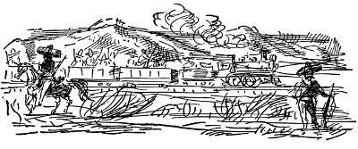

PRIVATE: Özel.
birkaç düşman hava gemisi, gece yarısından önce saldırıya geçti. Bombalar hiçbir ayrım yapılmaksızın, hiçbir askeri önemi olmayan bölgelere atıldı
demiryolcular bir adım bile gerilemiyor
Solomon Adaları'nı 2.30'da geçerken yolunun doksanıncı milinde Deutschland'ın Kaptanı Koenig bu geçişi hiç de yararımıza olmayan koşullar altında yapmak zorunda kalacağız dedi. Yanından geçen bütün gemiler onu selamlamak için düdük çaldı.
Sen getirdin beni bugünlere
Yaptığını beğeniyorsundur umarım
Batırdın beni aşağılara, aşağılara, aşağılara
İçimde ölene dek ruhum
Sir Roger Casement bu sabah saat dokuzda Pentonville Gaol'da asıldı.
alman denizaltıları hiçbir engelle
karşılaşmadan burunları geçiyor
yalnızca kimono giymiş yüzen kızlar şaşkınlık yarattı eğlence güvertesinde birinci mevkinin kahvesinde sütlü öğle yemeği Birleşik Amerika'nın tahıl ürününde ağır kayıplar görüldü ovaya doğru hızla akan dev bir sel duvarından kaçmak için aceleyle sıcak ekmek dürümlerini bırakıven Avusturyalılara İtalyanlar sevinç çığlıklarıyla karşılık verdiler Profesör Beethoven'in yumuşak biftek izlenimi uyandırdığını söyledi
tutukevinin büyüsü kent çöplüğünü altın
madenine çevirdi
bu gece ay, satürn gezegenini görmemizi
engelleyecek
işçi kardeşler karanlıkta kavga ediyor
Mac
İsyancılar, Juarez'i yakaladılar. Huerta kaçtı. Avrupa'ya giden buharlı gemiler, Paris'e varmaya çalışan bilim adamlarıyla doluydu. Venustlano Carranza Mexico City'de Başkan oldu. Biri Mac'a, Meksika'yı geçip başkente gidebilmesini sağlayacak geçiş belgesini ayarladı. Ayrılacaklarında Encarnacion ağladı, bütün anarşistler onu uğurlamak için istasyona geldi. Mac, Zapata'ya katılmak istiyordu. Encarnacion'dan az buçuk İspanyolcayla devrim politikası konusunda belli belirsiz düşünceler kapmıştı. Tren yolculuğu beş gün sürdü. Tam beş kez, önlerindeki bozuk demiryolu onarılırken yolları kesilip soyuldular. Geceleri arada bir camlardan içeri kurşunlar giriyordu. Caballos yakınlarında birtakım adamlar, koca şapkalarını sallayıp ateş ederek atlarla treni izlediler. Yük vagonlarındaki askerler uyanıp onlara karşılık verince adamlar savrulan toz bulutunun içinde uzaklaştı. Ateş başlayınca yolcular, ya upuzun koridora uzanmak ya da koltukların altına girmek zorunda kaldı. Saldırı püskürtüldükten sonra yaşlı bir kadın haykırmaya başladı, bir çocuğun başından vurulmuş olduğu anlaşıldı. Annesi iriyarı, çiçekli giysili bir kadındı. Küçücük kanlı bedeni atkısına sarmış, trenin içinde doktor arayarak dört dönüyordu ama çocuğun ölmüş olduğunu herkes anlamıştı.
Mac bu yolculuğun hiç bitmeyeceğini düşünüyordu, istasyonlardaki yerli kadınlardan biberli yiyecekler, hamam suyu gibi biralar aldı, Meksika içkileri içmeye, yolcu dostlarıyla konuşmaya çalıştı. Sonunda Queretaro'yu geçtiler, tren, buz gibi soğuk havada, uzun eğimleri hızla almaya başladı. Sonra agave ağaçlarının çaprazlamasına dikilmiş olduğu sonsuz tarlaların yanı başında büyük volkanların sivri tepeleri biçimlenmeye başladı. Ansızın tren takırtılarla, bahçe duvarlarının, tüysü ağaçların arasından geçiyordu. Zincirlerini şangırdatarak durdu; Mexico City.
Tüm erkekleri beyazlar, tüm kadınları karalar, lacivertler giymiş, alçak sesle konuşan kalabalıkların arasından geçip pırıl pırıl sokaklarda dolaşırken Mac kendini yitip gitmiş hissediyordu. Sokaklar, tozlu, güneşli, sessizdi. Açık dükkânlar, arabalar, tramvaylar, parlak büyük otomobiller vardı. Mac kaygılıydı. Yalnızca iki doları kalmıştı. Trende öylesine uzun süre geçirmişti ki varacağı yere geldiğinde ne yapmak niyetinde olduğunu unutmuştu. Temiz giysiler edinmek, yıkanmak istiyordu. Ortalıkta uzun süre dolaştıktan sonra, “Amerikan Bar” yazan bir yer gördü. Bacakları yorgundu. Bir masaya oturdu. Garson, gelip İngilizce olarak ne istediğini sordu. Aklına başka şey gelmediği için viski istedi, içkisini içip başını ellerinin arasına alarak oturdu. Barda birçok Amerikalı, koskoca şapkalarıyla bir içkisine zar atan birkaç Meksikalı vardı. Mac bir viski daha istedi.
Çiğ et gibi kırmızı gözlü, buruşuk kirli sarı gömlekli bir adam, tedirginlik içinde ortalıkta dolaşıp duruyordu. Gözü Mac'a ilişince gelip masasına oturdu. “Azıcık şurda otursam kusura bakmassın diimi?” diye sordu. “Şu orospu çocukları amma da patırdıyo, içine tükürdüüm. İşte, her taraf şapka . . . ne cehennemde şu garson? Bi bardak bira ver. Bugün bizim karıyla çocukları yolcu ettim . . . Sen ne zaman tüyüyosun?”
“Şey, ben daha yeni geldim,” dedi Mac.
“Ne konuşuyosun sen . . . Burası beyaz adama göre yer diil.. Şu haydutlar her gün burayı basabilirler . . . Korkunç olacak bak, söyliyim sana. Tek bir beyazı bile canlı bırakmazlar . . . Ama, onlar beni tahtalı köye göndermeden ben birkaçının canına okurum . . . Dinine yandığım yirmi beşini haklarım, yok yirmi dördünü.” Cebinden Colt marka tabanca çıkardı, mermileri avucuna boşaltı, saymaya başladı, “Sekiz.” Sonra ceplerini karıştırdı, mermileri kumar masasının üzerine dizdi. Yalnızca yirmi tane vardı. “Orospu çocuğunun biri soymuş beni.”
Uzun boylu, sırık gibi bir adam bardan gelip elini, gözleri kanlı adamın omzuna koydu. “Eustace, gerek duyacağımız ana kadar şunları ortadan kaldır . . . Ne yapacağını biliyorsun değil mi?” Mac'a döndü: “Çatışma başlar başlamaz tüm Amerikan yurttaşları elçilikte toplanacak. Orada en sonuncumuz da ölene kadar çarpışacağız.”
Bardan biri bağırdı. “Hey koca oğlan, bir tur daha atalım.”
Uzun boylu adam bara döndü.
“Burda sorun çıkacağını bekler gibisiniz, ahbaplar,” dedi Mac.
“Sorun mu, ne diyorsun yahu. Sen bu ülkeyi bilmiyosun. Yeni mi geldin?”
“Juarez'den şimdi geldim.”
“Olamaz. Queretaro'da demiryollarını darmaduman etmişlerdi.”
“Demek ki onarmışlar,” dedi Mac. “Şey, buralarda Zapata için ne diyorlar?”
“İçlerinde en kana susamış köpek o . . . Morelos'ta, şeker fabrikasındaki ustabaşını ateşte ağır ağır kızartırken gözlerinin önünde karısıyla kızlarının ırzına geçmişler . . . Vay canına, ahbap, sen buranın ne biçim yer olduğunu bilmiyosun. Ne yapmalıydık biliyor musun?.. Beyaz Saray'da koca göbekli, patates ağızlı bir reformcu yerine adam gibi biri olsaydı ne yapacağımızı bilirdik. Yüz bin kişilik ordu çıkarıp burasını dümdüz ederdik . . . Burası çok güzel bir ülke, ama şu lanet olası Meksikalıları vurmaya bile değmez, harcayacağın baruta, mermiye değmez . . . Köpoğlu köpeklerin hepsini toplayıp ateşe vereceksin. Bu orospu çocuklarının hepsi de gizliden gizliye Zapata'ya bayılır.”
“Siz ne iş yapıyorsunuz?”
“Petrol ararım, on beş yıldır da bu sıçan deliğindeyim, yetti artık. Bugün trene atlayıp Vera Cruz'a tüyerdim ya alacaklarım var, eşyaları da satmak gerek . . . Demiryollarını ne zaman uçuracaklarını bilemezsin, sonra da artık burdan bir yere kıpırdayamayız. Başkan Wilson yüzüstü bırakır bizi, kapanda sıçanlar gibi vurulup geberelim diye . . . Amerikan kamuoyu burdaki koşulları bir bilseydi . . . Canına yandığım, öteki ülkeler kıçıyla gülüyor bize . . . Şey, ahbap senin işin ne?”
“Matbaacı, linotipçi.”
“İş mi arıyorsun?”
Mac, içkilerin parasını ödemek için bir dolar çıkardı. “Sanırım aramak zorundayım,” dedi. “Bu benim sondan bir önceki dolarım.”
“Niye Mexican Herald'a gitmiyorsun? Orada hep İngilizce konuşan matbaacılar ararlar . . . Buralarda kimse kalmıyor artık . . . Buraları beyaz adama göre değil . . . Bak ahbap bu içkiler benden olsun.”
“Tamam, birer tane de benden içelim öyleyse.”
“Buralarda kıyamet kopucak, ahbap . . . her şey cehennemin dibini boylayacak . . . hazır gebermeden içelim.”
O akşam küçük bir Amerikan aşevinde yemek yedikten sonra, Mac, iş bulup bulamayacağını anlamak için Mexican Herald'a gitmeden önce viskinin etkisinden kurtulmak amacıyla Alameda'da dolaştı. Kendi kendine, birkaç hafta içinde buradaki durumu kavrayabileceğini söylüyordu. Alameda'nın uzun ağaçları, beyaz heykelleri, çeşmeleri, akşam karanlığında dolaşan iyi giyimli çiftler, arnavutkaldırımı yollardan takırtılarla geçen arabalar, kaldırım taşlarındaki sıra sıra çardaklarda pembe, sarı, yeşil şekerlemeler, meyveler, yemişler satan buz gibi bakışlı yerli kadınlar, her şey çok sessiz görünüyordu. Mac, barda konuştuğu adamın hanım evladı olduğu için kendisini de korkuttuğuna karar verdi.
Haftada otuz Meksika dolarına hemen iş buldu Mexican Herald'da, ama matbaada da herkes tıpkı bardaki adam gibi konuşuyordu. O gece Polonya asıllı, matbaada düzeltmen olarak çalışan biri, başını sokacağı bir deliği olsun diye onu küçük bir otele götürüp parasını alana kadar birkaç kuruş borç verdi.
“Paranın elinden geldiğince çoğunu peşin almaya bak,” dedi yaşlı Polonyalı. “Bugünlerde devrim olacak, ondan sonra da elveda Mexican Herald . . . elbette Wilson hemen duruma el atarsa o başka.”
“Benim için hava hoş, ben devrimi görmek istiyorum,” dedi Mac.
Yaşlı Polonyalı parmağını burnuna soktu, tuhaf tuhaf başını sallayıp yanından ayrıldı.
Sabah uyandığında parlak sarıya boyalı küçük bir odadaydı Mac. Eşyalar maviydi, pencerelerde kırmızı perdeler vardı. Perdelerin arasındaki uzun güneşlikler, çarşafların üzerinde sıcacık yollar bırakan canlı mor güneş ışığıyla çizgi çizgiydi. Bir yerlerde kanarya ötüyor, çörek yapan kadının çıkardığı sesler duyuluyordu. Kalkıp güneşlikleri açtı. Kırmızı kiremitli çatıların üstündeki gökyüzü bulutsuzdu. Sokak bomboştu, güneş ışığıyla doluydu. Serin, yumuşak havayla ciğerlerini şişirdi, orada dururken güneşin, kollarını, yüzünü, boynunu yaktığını hissetti. Erken olmalıydı. Yatağına dönüp yine uykuya daldı.
Birkaç ay sonra Wilson, Amerikalıların Meksika'dan çıkmalarını istediğinde Concha adında bir kız, iki de beyaz İran kedisiyle, Plaza del Carmen'deki küçük bir daireye yerleşmişti Mac. Concha bir Amerikan firmasında steno ve çevirmen olarak çalışmış, bir petrolcünün üç yıl boyunca metresi olmuştu, bu yüzden de oldukça iyi İngilizce konuşuyordu. Petrolcü, Huerta kaçtığı sıralarda ürküntü içinde trene atlayıp soluğu Vera Cruz'da almış, Concha'yı sudan çıkmış balık gibi ortalıkta bırakıvermişti. Postaneye girerken gördüğü ilk günden beri Mac'tan hoşlanıyordu. Mac'ı çok rahat ettirdi. Mac, gidip Zapata'ya katılma düşüncesinden söz edince gülüp o çiftlik kölelerinin hepsinin cahil yabanlar olduğunu, yalnızca kırbaçlanarak yönetilebileceklerini söyledi. Başına sürekli siyah atkı örten yaşlı annesi, onlara yemek pişirmek için geliyordu. Mac, yoğun kahverengi salçalı hindi yemeğini, kırmızıbiberli peynirleri sevmeye başlamıştı. Kedilerden birinin adı Porfirio, ötekinin Venustiano'ydu, yataklarının ayakucunda uyuyorlardı. Concha çok tutumluydu, elinden geldiğince iyi kullanmaya çalışıyordu Mac'ın parasını. Kente inip hovardalık ettiğinde, içkiden başı ağrıyarak geç saatlerde eve döndüğünde hiç söylenmiyordu. Vera Cruz'a giden kalabalık trenlere binmeye çalışmak yerine, Mac, biriktirmiş olduğu birazcık parayla, gözü dönmüş Amerikalı işadamlarının tutturabildiklerine sattıkları büro eşyalarını aldı. Oturdukları evin arka bahçesine yığdı. Bunları almak önce Concha'nın aklına gelmişti, bir daha başlarından atamayacaklarını söyleyerek kıza takılıyor, ama o kafasını sallayarak, “Biraz bekle bakalım,” diyordu.
Pazar günleri, yemeğe arkadaşlarını çağırması Concha'nın çok hoşuna gidiyordu. Hepsine seve seve hizmet ediyor, bira, konyak alması için küçük kardeşi Antomo'yu sağa sola yolluyor, biri uğrayıverir diye evde hep pasta ve çörek bulunduruyordu. Mac, bazen bunun San Diego'da Maisie'yle yaşadığı hayattan ne kadar güzel olduğunu düşünüyor, gidip Zapata'ya katılma düşüncesi de kafasına daha seyrek takılıyordu.
Polonyalı düzeltmen Korski'nin siyasal sürgün, sosyalist ve çok bilgili bir adam olduğu anlaşıldı. Bir öğle sonrası boyunca yarım bardak konyağın başına oturup Avrupa'daki politik durumu anlatırdı. Savaşın başında Avrupa'daki bütün sosyalist partilerin çökertilmesinden sonra artık hiç yan tutmuyor, yalnızca gözlemci olarak bakıyordu her şeye. Onun geliştirdiği kurama göre, uygarlık ve gelişigüzel beslenme düzeni, insan ırkının çöküşüne yol açıyordu.
Sonra, Ben Stowell adında, bağımsız bir petrolcü olan ve yasalar çerçevesinde birkaç petrol kuyusu işletmek için Carranza hükümetiyle pazarlığa oturmaya çalışan biri vardı. Çoğunlukla beş parası olmaz, Mac ona borç verirdi ya, hep milyonlardan söz ederdi. Politika konusunda kendisini ilerici diye adlandırır, Zapata'yla, Villa'nın dürüst kişiler olduklarını düşünürdü. Ben Stowell, her tartışmada Korski'ye karşı çıkar, toplumcu olmayan tavırlarıyla onu öfkeden çılgına çevirirdi. Mac, çocukların okulu için Maisie'ye yollamak amacıyla para kazanmak istiyordu. Arada bir Rose için bir kutu oyuncak göndermek çok hoşuna gidiyordu. Ben'le oturup Meksika'da para kazanma olanakları üzerine uzun uzun konuşuyorlardı. Ben Stowell, bir öğle sonrası boyunca oturup sosyalizm üzerine konuşmaktan, içki içmekten, İngilizce öğrenmekten hoşlanan birkaç genç radikal politikacı getirdi eve. Mac, genellikle çok konuşmaz, ama bazen sinirlenir, onlara Dünya Sanayi İşçileri kuramlarına dayalı uzun söylevler çekerdi. Concha, yemeği getirip başını sallayarak, “Her yoksul adam sosyalista . . . a como no? Ama zengin olunca hepiniz pek çok kapitalista,” diyerek bitiriverirdi bütün tartışmaları.
Bir pazar günü, Mac, Concha, birkaç Meksikalı gazeteci, Ben Stowell, Lirico'nun korosunda şarkı söyleyen Angustia adlı kız arkadaşı tramvayla Xochimilco'ya gittiler, içinde masası, bir de tentesi bulunan tekne tuttular. Bir yerli, uzun bir sırıkla tekneyi yöneterek onları, bol çiçekli alanların, sebze bahçelerinin arasından geçen kayın ağaçlarıyla çevrili kanallarda gezdirdi. Pulque[12] içtiler, bir şişe de viskileri vardı. Kızlara kalla zambağı satın aldılar. Meksikalılardan biri, gitar çalıp şarkı söyledi.
Öğleden sonra yerli, tekneyi bindikleri yere geri getirdi, ikişer ikişer ormanın içine dağıldılar. Mac ansızın yurdunu çok özledi, Concha'ya Amerika'daki çocuklarını, özellikle de Rose'u anlattı. Kız gözyaşlarına boğuldu, çocukları ne kadar sevdiğini, ama on yedi yaşındayken çok hastalandığını, herkesin ölecek sandığını, bu yüzden artık çocuğunun olamayacağını belirtti, yalnızca Porfirio'yla Venustiano vardı. Mac, onu öperek hep yanında olacağını söyledi.
Elleri kolları çiçekle dolu olarak tramvay durağına geldiklerinde, Mac'la Ben, kızları eve tek başlarına yollayıp içki içmeye gittiler. Ben, böyle yaşamaktan bıktığını, yükünü tutup Amerika'ya dönerek evlenmek, yuva kurmak istediğini anlattı. “Görüyorsun ya Mac,” dedi, “kırk yaşıma geldim, insan hayatı boyunca böyle ortalıkta sürtüp duramaz.” “Şey, ben de kırka yaklaştım,” dedi Mac. Pek konuşmadılar bundan sonra, ama Ben, Mac'la birlikte Mexican Herald binasına kadar yürüdü, sonra da orada kalan birkaç petrolcüyle konuşmak için Iturbide'ye gitti. “Gücünü yitirmezsen bu, büyük bir hayat,” dedi Mac'a elini sallayıp uzaklaşırken. Kalın boyunlu, bodur, yampiri yürüyen bir adamdı.
Birkaç gün sonra, daha Mac yataktan kalkmadan Ben Plaza del Carmen'e geldi. “Mac, bu öğlen gelip benimle yemek ye,” dedi. “Burada G. H. Barrow adında biri var, ona azıcık kenti göstermek istiyorum, işimize yarayabilir . . . Daha doğrusu neyin peşinde olduğunu da anlamak istiyorum.” Adam, Meksika'daki durum üzerine makaleler yazıyor. Amerikan İşçi Federasyonu'yla bağı olduğu söyleniyordu. Yemekte, tedirginlikle suyun içilip içilemeyeceğini, karanlık çöktükten sonra sokaklarda yürümenin sakıncaları olup olmadığını sordu. Ben Stowell, onunla biraz şakalaştı, içkievlerine girip yerlere ateş ederek içerdekilere dans ettiren generallerle arkadaşlarının sonra da orasını atış poligonu olarak kullandıklarını anlattı. “Burada meclise atış poligonu derler,” dedi Mac. Barrow, o gün öğleden sonra Union Nacional Trabajadores'in[13] toplantısına katılacağını söyleyip, kendisine çevirmenlik yapmaları için birlikte gitmelerini önerdi. Mac'ın boş günüydü. “Olur,” dediler. Pan-Amerikan İşçi Federasyonu'na katmak amacıyla, Meksika'daki dengeli işçi kuruluşlarıyla ilişki kurmaya çalışmasının istendiğini açıkladı. Bir şeyler ortaya çıkarsa, Gompers bizzat gelecekti. Gemilerde kâtiplik ve trenlerde biletçilik yaptığını, Demiryolu İşçileri Derneği bürolarında çalıştığını, ama şimdi Amerikan İşçi Federasyonu'nda görevli olduğunu anlattı. Amerikalı işçilerin yaşama sanatı üzerine daha çok bilgileri olsaydı keşke, diyordu. Amsterdam'daki İkinci Enternasyonal toplantısına katılmıştı, ona göre Avrupalı işçiler yaşama sanatını biliyorlardı. Mac, ne bok yemeye İkinci Enternasyonal'in savaşı önlemek için bir şeyler yapmadığını sorunca, zamanın bu iş için henüz olgunlaşmamış olduğunu söyleyip Almanların canavarlıklarını anlatmaya başladı.
“Her gün Meksika'da olanlarla karşılaştırıldığında, Almanların canavarlıkları çocuk oyuncağı kalır,” dedi Ben.
Barrow, Meksikalıların gerçekten söylendiği gibi ahlaksız olup olmadıklarını sordu. Yemekte içtikleri bira epeyce sertti, hepsi biraz kafayı bulmuştu. Yüksek frengi oranı yüzünden kızlarla yatmanın sakıncalı olup olmadığını da bilmek istiyordu. Mac, evet, dedi ama eğer şöyle bir göz atmak istiyorsa Ben'le ikisi ona güvenli yerler gösterebilirlerdi. Barrow kıkır kıkır güldü, biraz tedirgin olmuştu ya yine de bir bakabileceğini söyledi. “Koşulları incelerken insan olayların her yönünü görmelidir.”
Ben Stowell, onun masanın ucunda duran eline şaplak vurup Meksika'nın arka yüzünü gösterecek adamın Mac olduğunu söyledi.
Koyu renk giysiler içinde, esmer, zayıf adamların çoğunlukta olduğu toplantıya gittiler. Salonun dibine yığılmış olan kalabalık yüzünden önce içeri giremediler, ama Mac tanıdığı bir görevli buldu, adam onları özel bölüme soktu, içerisi çok havasızdı, bando çalıyor, şarkılar söyleniyordu, konuşmalar da çok uzundu. Barrow, yabancı bir dili dinlemenin uykusunu getirdiğini söyleyip kentte dolaşmalarını önerdi. Kızıl Işık Mahallesi, duyduğuna göre . . . oradaki koşullarla ilgileniyordu.
Dışarı çıkınca, Ben'in tanıdığı bir gazeteci olan Enrique Salvador'a rastladılar. Adamın arabası, bir de şoförü vardı. Onlarla tokalaştı, güldü, arabanın, arkadaşı polis şefinin olduğunu, isterlerse onları San Angel'e götürebileceğini söyledi. Salvador'un deyimiyle Meksika'nın Champs Élysées'si olan Chapultepec'ten geçip uzun bir sokağa gittiler. Tacubaya yakınlarında, Salvador, önceki hafta Carranza'nın birlikleriyle Zapata yanlılarının çatıştığı yeri, varlıklı bir elbise tüccarının haydutlar tarafından öldürüldüğü köşeyi gösterdi,
G. H. Barrow sürekli, kent dışına çıkmalarında bir sakınca olup olmadığını sorup duruyor, Salvador da, “Ben gazeteciyim, herkesin dostuyum,” diye yanıtlıyordu.
San Angel'de birkaç kadeh içtiler, kente döndüklerinde Pajaritos Mahallesi'nde arabayla dolaştılar. G. H. Barrow, her birinin içinde birer yatak, birkaç kâğıt çiçek, bir haç bulunan, açık kapıdaki kırmızı ya da mavi perdeden içerisi görünen aydınlık küçük odacıkları, kapılarının önünde ayakta duran ya da eşiklere oturmuş kısacık çamaşırlar içindeki kızları görünce sesi soluğu kesildi, gözleri buğulandı.
“Görüyorsun ya,” dedi Ben, “çocuk oyuncağı bu işler . . . Ama buralarda dikkatli olmalısın . . . Salvador bize yemekten sonra iyi bir yer gösterecek. Bu işleri bilir, çünkü evlerin çoğunu işleten polis şefi onun iyi arkadaşıdır.”
Ama, Barrow odacıklardan birine girmek istiyordu, bu yüzden de inip kızlardan biriyle konuştular. Salvador, şoförü birkaç şişe bira almaya gönderdi. Kız onları çok iyi karşıladı, Barrow kıza sorular sormaya çalıştı Mac aracılığıyla ama Mac kıza soru sormaktan hoşlanmıyordu, bu işi Salvador'a bıraktı. G. H. Barrow kızın çıplak omzuna elini koyup iç çamaşırını çıkarmaya kalkışırken onu çırılçıplak görebilmek için kaç para istediğini sordu, kız ne demek istediğini anlamadı, hızla kaçtı yanından, bağırdı, sövdü, Salvador neler söylediğini çevirmeye yanaşmadı. “Çıkaralım şu manyağı buradan,” dedi Ben, alçak sesle Mac'a, “kavgaya falan bulaşmadan.”
Parlak küçük fıçılar içinde tekiladan başka içkinin satılmadığı küçük bara girip yemekten önce birer tane içtiler. Salvador, önce başparmağıyla işaretparmağı arasındaki boşluğa tuz koyup küçük tekila bardağından bir yudum alarak tuzu yaladıktan sonra, bitirmek için de biberli salça yiyerek bu içkinin nasıl içileceğini Barrow'a gösterdi, ama Barrow bu işleri tersinden yapıp boğulurcasına öksürdü.
Yemekte epey sarhoştular, G. H. Barrow sürekli Meksikalıların yaşama sanatını anladıklarını söylüyor, bu sözlerle Salvador'a yaltaklanıyordu aslında. Salvador'sa yerlilerin zekâlarını, Latin dehasını, anlaşabildiği tek Amerikalıların Mac'la Ben olduğunu anlatıyor, yemek paralarını vermekte diretiyordu. Arkadaşı polis şefinin hesabına yazdıracaktı nasılsa. Daha sonra, Fransız kızların çalıştığı söylenen bir sinemanın yanındaki bara gittiler ama orada Fransız kız falan yoktu. Üç yaşlı adam vardı içerde, viyolonsel, flüt, keman çalıyorlardı. Salvador onlara “La Adelita”yı, “La Cucaracha”yı çaldırdı, hep bir ağızdan söylediler, içeri girdiklerinde, geniş şapkalı, sırtında kocaman, parlak bir tüfek kılıfı taşıyan yaşlı bir adam vardı, onları görünce hemen içkisini bitirip bardan çıktı. Salvador, Mac'ın kulağına, adamın General Gonzales olduğunu, Amerikalılarla içki içerken görülmemek için dışarı çıktığını fısıldadı.
Ben'le Barrow, köşedeki masada kafa kafaya vermiş petrol işini konuşuyorlardı. Barrow, belli petrol şirketleri için araştırmalar yapmak amacıyla birinin geleceğini, hemen bugünlerde Regis'te olacağını anlatıyor, Ben, onunla tanışmak istediğini söyleyince, Barrow, kolunu onun omzuna atıp bu araştırmacının da tanımak isteyeceği adamın Ben olduğunu, gerçek çalışma koşulları konusunda ancak ondan bilgi alabileceğini belirtiyordu. Bu arada Mac'la Salvador, kızlarla Küba dansları yapıyorlardı. Sonra Barrow, biraz sallanarak ayağa kalkıp Fransız kızları beklemek istemediğini, niçin daha önce uğradıkları o yere gidip biraz da esmer etin tadına bakmadıklarını söyledi, ama Salvador onları Amerikan elçiliğinin yanındaki Remedios'un evine götürmekte diretti. Kötü bir Fransızcayla, “Quelque cosa de chic,”[14] diyordu. Mermer merdivenli, kristal şamdanlı, sarı kalın perdeli, tüllü, her köşesinde ayna bulunan, büyük bir evdi burası. Daha çok rahibeye benzeyen, kara gözlü, kır saçlı, siyahlar giymiş, kara atkıya sarınmış madamla onları tanıştırırken, “Personne ğue les henerales vieng aquai,”[15] dedi. İşi olmayan bir tek kız vardı, bu yüzden kızı Barrow'a ayarlayıp ödenecek parayı belirledikten sonra onu orada bıraktılar. Hava soğuktu, gökyüzü yıldız içindeydi.
Salvador, üç yaşlı adamı çalgılarıyla birlikte arabanın arkasına bindirip kendini çok romantik hissettiğini, sevgilisine serenat yapmak istediğini söyledi, şosede çılgınca hızla Guadalupe'ye doğru gitmeye başladılar. Mac, Ben, Salvador, şoför ve üç yaşlı adam bir ağızdan, akordu bozuk çalgılarla “La Adelita”yı söylüyorlardı. Guadalupe'de pencereleri kafesli bir evin karşısındaki çınar ağaçlarının altında durdular, “Cielito”yu, “Lindo”yu, “La Adelita”yı “Cuatro milpas”ı söylediler. Ben'le Mac tek başlarına “Uzak tutun onu bu buğulu çiy damlalarından” şarkısını bitirmiş “Ah, gömmeyin beni o yapayalnız kırlara”ya başlarken bir kız cama çıkıp uzun süre, alçak sesle İspanyolca konuştu Salvador'la.
“Elle dit que nous escandola[16] yapıyoruz ve buradan gitmeliyiz. Tres chic,” dedi Salvador.
O arada devriye gezen askerler de gelmiş hepsini tutuklamaya niyetleniyorlardı ki, bir subay ortaya çıkıp Salvador'u ve arabayı tanıdı, onları toplayıp konakladıkları yerlerinde içki içmeye götürdü. Mac'ın evine vardıklarında zilzurna sarhoştular. Beklemekten yüzü solmuş, bitkin Concha, yemek odasında Ben'e yatak yaptı, yatacakları sıra Ben, “Tanrı aşkına Concha, ne iyi kızsın sen böyle. Yükümü tutunca sana Federal Bölge'de bulunabilecek en güzel elmas küpeleri satın alacağım,” dedi. Salvador'u son gördüklerinde, iki tekerlek üzerinde köşeyi dönen arabanın ön koltuğunda ayağa kalkmış, orkestra şefi gibi abartmalı kol sallayışlarla üç yaşlı adamı yöneterek “La Adelita”yı söyletiyordu.
Noel'den önce Ben Stowell, Tamaulipas'a yapmış olduğu yolculuktan çok neşeli döndü. Talih yüzüne gülüyordu. Tampico yakınlarında yerel bir generalle anlaşma yapmış, yarı yarıya paylaşmak koşuluyla bir petrol kuyusunu işletmeye başlamıştı. Salvador aracılığıyla Carranza hükümeti üyelerinin bazılarıyla dost olmuştu. Birleşik Amerika'daki büyük pay sahiplerinden bazılarıyla pazarlığa oturabileceğini umuyordu. Yığınla parası vardı, Regis'te oda tuttu. Bir gün matbaaya uğrayıp Mac'a bir dakika kendisiyle dışarı gelmesini söyledi.
“Bana bak, Mac,” dedi, “sana bir önerim var . . . Şu yaşlı Worthington'un kitapçı dükkânını biliyorsun, değil mi? Dün gece kafayı tuttum, iki bin pesoya orasını satın aldım . . . Pılımı pırtımı toplayıp yurduma döneceğim, diyor.”
“Namussuzum yapmışsındır bunu.”
“Onu ayak altından kaldırdığım için de çok mutluyum.”
“Seni pezevenk, Lisa'nın peşindesin.”
“Tamam, belki o da adamı ayak altından kaldırdığıma seviniyordur.”
“Çok güzel kız.”
“Sana sonra verilecek bir sürü haberim daha var . . . Şu Mexican Herald'da daha kafan bozulmaya başlamadı mı? Bir önerim var, Mac . . . Tanrı bilir sana neler borçlu olduğumu . . . Bir zamanlar Concha'nın sana satın aldırdığı arkadaki eşya yığını var ya . . .” Mac başını salladı. “Tamam, şimdi o eşyaları ben alacağım, kitapçı dükkânının yarı hissesini de sana vereceğim. Bir işyeri kuruyorum. Sen kitap işini bilirsin . . . kendin söyledin bana . . . İlk yılın kazancı senin, sonrakileri paylaşacağız, tamam mı? Mutlaka kazanacaksın. Şu yaşlı budala Worthington kazanıyordu; üstüne üstlük Lisa'yı da pazarlığa kattı . . . Var mısın?”
“Vay canına, dur azıcık düşüneyim. Ben . . . ama şimdi gazeteye dönmem gerek.”
Böylece, Mac kendini bir sürü kırtasiye eşyası ve birkaç yazı makinesiyle Calle Independencia'da kitapçı dükkânı işletir buldu. hayatında ilk kez kendi kendinin patronu olmak çok hoşuna gitmişti. Bir dükkâncının kızı olan Concha da çok mutluydu. Kitaplara bakıyor, alıcılarla konuşuyor, böylece de Mac'a arkada oturup kitap okumaktan, arkadaşlarıyla çene çalmaktan başka yapacak iş kalmıyordu. O yılın Noel'inde Ben ve uzun boylu, Malaga'da dansözlük yaptığı söylenen, kamelya gibi bembeyaz teni, kuzgun karası saçları olan İspanyol Lisa, Chapultepec'e doğru yeni bir yerleşim yerinde Ben'in tuttuğu, Amerikan tipi banyosu ve mutfağı olan apartman dairesinde çeşitli eğlenceler düzenlediler. Asociacion de Publicistas'ın şölen verdiği gün Ben, neşe içinde kitapçıya girdi, Mac'la Concha'nın yemekten sonra onlara gelmesini istedi. Concha birkaç arkadaşını da getirebilir miydi, güzel, nasıl davranılacağını bilen, pek de hoppa olmayan kızlar yani. Vera Cruz'dan dönmüş olan G. H. Barrow'la New York'tan gelmiş, birtakım işler karıştıran ve daha neyin peşinde olduğunu tam anlayamadığı çok önemli biri için eğlence düzenlemişti Ben. Önceki gün Carranza'yı görmüştü, şölende herkes ona büyük saygı göstermişti.
‘“Hey yavrum, Mac, sen de olacaktın o şölende. Şu tramvaylardan birini tuttular, içine upuzun bir masa kurdular, bir de orkestra vardı, bizi San Angel'e götürüp getirdiler, sonra da tüm kenti dolaştırdılar.”
“Yola çıkarlarken gördüm onları,” dedi Mac. “Bana daha çok cenaze alayı gibi göründü.”
“Hey yavrum, şahaneydi ama. Salvador ve herkes ordaydı, şu Moorehouse denen New York'lu büyük herif de neye uğradığını şaşırdı. Her an iskemlesinin altında bomba patlamasını bekler gibiydi . . . biri de patlatıverseydi, düşün ne kral bir şey olurdu Meksika için. Kentteki düzenbazların tümü ordaydı.” Ben'lerdeki eğlence pek hoş geçmedi. Ben'in umduğunun tersine, J. Ward Moorehouse'ın gözü kızları tutmadı. Yorgun, sarışın bir kız olan sekreterini birlikte getirmişti, ikisinin de korkudan ödleri patlıyor gibiydi. Meksika işi bir yemek yediler, şampanya ve konyak içtiler, gramofonda Victor Herbert'in, Irving Berlin'in plaklarını çaldılar, içerideki kalabalığın büyüsüne kapılan küçük gezici bando da sokakta Meksika havaları çaldı. Yemekten sonra içerisi biraz fazla gürültülü olmaya başlamıştı, Ben'le Moorehouse balkona iskemleler çıkarıp, ellerinde purolarıyla petrol işi üzerine uzun bir konuşmaya giriştiler. J. Ward Moorehouse, uzun uzun açıklamada bulundu, anlayacağı gibi bütünüyle resmi olmayan biçimde, birtakım ilişkiler kurmak için, durumun ne olduğunu anlamak, Carranza'nın, Amerikalı yatırımcılara inatla karşı çıkmasının ardında ne bulunduğunu görmek için gelmişti. Amerika'da ilişkide bulunduğu büyük işadamlarının yalnız hakça paylaşma istediklerini, düşüncesine göre, bakış açıları, bir danışma bürosu ya da Meksikalı gazetecilerin dostça işbirliği aracılığıyla iyice anlatılabilirse . . .
Ben, yemek salonuna dönüp Enrique Salvador'la Mac'ı getirdi. Birlikte durumu bir kez daha konuştular, J. Ward Moorehouse eski bir gazeteci olarak basının durumunu tümüyle anladığını söyledi, belki de Mexico City'deki durum, Chicago ya da Pittsburgh'dakinden çok da değişik değildi. Gazetecilerin tek istediği, durumların getirdiği her yeni açıya, hakça paylaşım, dostça işbirliği ruhuyla gereken önemi vermekti, ama onun anladığına göre Meksika'daki iş dünyasının böylesine karışmasının nedeni onların da tıpkı Amerikan basını gibi, Meksika politikası konusunda yanlış bilgi almalarıydı. Eğer Mr. Enrique ya da oradaki beylerden herhangi biri Regis'e uğrarsa, onlarla enine boyuna, daha ayrıntılı konuşmaktan mutluluk duyacaktı. Meksika'da geçireceği sürenin çok kısıtlı olması, yapması gereken görüşmelerin yoğunluğu yüzünden kendisi orada bulunmasa bile sekreteri Mrs. Williams, onlara, seve seve istedikleri her türlü bilgiyi, resmi olmayan biçimde ilişkide bulunduğu büyük Amerikan şirketlerinin alacakları tavır üzerine özel olarak hazırlanmış, bütünüyle gizli bazı belgeleri verecekti.
Sonra da kendisini bağışlamalarını, Regis'te kendisini bekleyen telgraflar bulunduğunu söyledi. Salvador, onu ve sekreteri Mrs. Williams'ı, polis şefinin arabasıyla otellerine götürdü.
J. Ward Moorehouse gittikten sonra Mac, “Vay canına Ben, tam bir orospu çocuğu bu,” dedi.
“Mac,” dedi Ben, “bu bebeğin her yanı gıcır gıcır, kaymak gibi dolarlarla dolu. Canına yandığım, şu sözünü ettiği ilişkilerden kimilerine girmek isterdim . . . Hâlâ da girebilirim . . . Sen istersen peri masallarıyla oyalan, Mac. Ben bundan sonra artık büyük heriflerle işbirliği yapacağım.”
Eğlencenin sonraki bölümü hiç de seçkin değildi. Ben, bir sürü konyak daha çıkardı, adamlar kızları yatak odalarına, koridorlara, hatta kilere, mutfağa çekmeye başladılar. Barrow, yarı İngiliz olan Nadia adlı bir sarışına yaltaklanıyordu, gece boyu kıza, yaşama sanatını anlattı. Herkes gittikten sonra Ben onları kendi yatak odasına kilitlenmiş buldu.
Dükkâncı olarak yaşamaktan hoşlanıyordu Mac. Canı istediği zaman kalkıyor, Katedral'in, Ulusal Saray'ın önündeki güneşli sokaklarda yürüyor, kaldırımlarına daha yeni su serpilmiş, çiçek ve pişmiş kahve kokulu sabah rüzgârlarının tatlı tatlı estiği Independencia'nın önünde dolaşıyordu. Dükkâna vardığında Concha'nın kardeşi Antonio, kepenkleri kaldırmış içerisini süpürür oluyordu. Mac ya arkaya oturup kitap okuyor ya da gelenlerle İngilizce, İspanyolca çene çalarak ortalıkta dolaşıyordu. “Öyle pek fazla kitap sattığı yoktu, ama tüm Amerikan ve Avrupa dergilerini, gazetelerini bulunduruyor, bunlar çok iyi satış yapıyor, özellikle de Police Gazette ve La Vive Parisienne çok alıcı buluyordu. Bankada para biriktirmeye başlamıştı, bir yazı makinesi firmasının temsilciliğini almayı kuruyordu. Salvador, bakanlıklardan birine sürekli olarak kırtasiye satması için anlaşma yaptırmaktan, böylece de onu zengin etmekten söz açıyordu.
Bir sabah Ulusal Saray'ın önündeki alanda bir kalabalık ilgisini çekti. Kemerin altındaki içkievlerinden birine girip bira istedi. Garson, Carranza birliklerinin Torreon'u yitirdiklerini, Villa'yla Zapata'nın Federal Bölge'ye yaklaşmakta olduklarını söyledi. Kitapçı dükkânına vardığında, Carranza hükümetinin kaçtığı, devrimcilerin gece yarısından önce kente girecekleri söylentisi dolaşıyordu ortalıkta. Dükkâncılar kepenklerini indirmeye başlamışlardı. Concha'yla annesi gözyaşları içinde gelip bunun, Madero'nun düştüğü o korkunç haftadan daha kötü olacağını, devrimcilerin kenti yakıp yıkarak yağmalamaya yemin ettiklerini anlattılar. Antonio, koşarak gelip Zapata yanlılarının Tacuba'yı bombaladıklarını söyledi. Mac, arabaya atlayıp tanıdığı birilerini görebilmek umuduyla Meclis'e gitti. Sokağa bakan bütün kapılar açıktı, koridorlara kâğıtlar saçılmıştı. İçeride kimseler yoktu; yalnızca yaşlı bir yerliyle karısı, el ele tutuşmuş dolaşıyorlar, yaldızlı tavana, resimlere, yeşil çuha kaplı masalara büyük bir saygı içinde bakıyorlardı. Yaşlı adam kilisedeymiş gibi şapkasını eline almıştı.
Mac, şoföre, Salvador'un çalıştığı gazeteye gitmesini söyledi ama oradaki kapıcı göz kırparak Salvador'un, polis şefiyle birlikte Vera Cruz'a kaçtığını anlattı. Sonra elçiliğe gitti, orada da hiç kimseyle bir şey konuşamadı. Bütün bekleme odaları, çiftliklerden, ayrıcalıklı işyerlerinden gelmiş olan, Başkan Wilson'a sövüp duran, devrimciler üzerine öyküler anlatarak birbirinin ödünü patlatan Amerikalılarla doluydu. Konsoloslukta Mac bir Suriyeli'yle karşılaştı, adam kitaplarını satın almayı öneriyordu. “Hayır, olmaz,” dedi Mac, Independencia'nın önünden geçerek geri döndü.
Dükkâna vardığında, gazeteci çocuklar ortalıkta koşuşuyor, “Viva la revolucion revindicadora,”[17] diye bağırıyorlardı. Concha'yla annesi tam bir ürküntü içindeydiler, hemen Vera Cruz'a giden trene binmeleri gerektiğini, yoksa öldürüleceklerini söylüyorlardı. Devrimciler manastırları yağmalıyor, rahibeleri, rahipleri öldürüyorlardı. Yaşlı kadın odanın bir köşesine diz çökmüş, Ave Marias'ı söylemeye başlamıştı.
“Lanet olsun,” dedi Mac. “Haydi burasını satıp Amerika'ya gidelim. Gitmek ister misin, Concha?” Concha istekle başını salladı, gözyaşları arasından gülümsedi. “Ama anneni ve Antonio'yu ne yapacağız?” Concha, Vera Cruz'da evli bir kız kardeşi olduğunu söyledi. Eğer oraya varmayı başarabilirlerse onları kız kardeşine bırakabilirlerdi.
Her yanından ter sızan Mac, Suriyeli'yi bulmak için konsolosluğa gitti. Fiyatta anlaşamıyorlardı. Mac, çok umutsuz durumdaydı, çünkü bütün bankalar kapalıydı, hiçbir yerden para alabilmesine olanak yoktu. Suriyeli, aslında Lübnanlı olduğunu söylüyordu. Bir Amerikan yurttaşı, bir Hıristiyan olarak Mac'a yüz dolar verecekti şimdi, buna karşılık da o altmış günlük süre tanıyarak dükkândaki hissesini iki yüz dolara satacaktı. Adam, bir Amerikan yurttaşı ve bir Hıristiyan olduğunu, Mac'ın karısıyla çocuklarının hayat kurtarmak için kendisini tehlikeye attığını söylüyordu. Mac öylesine şaşkın durumdaydı ki anlaşmayı Amerikan doları üzerinden yapmışken adamın yüz Meksika doları vermekte olduğunu son anda fark etti. Suriyeli, “Tanrı ikimizi de korusun, ne büyük yanlışlık yapıyordum,” dedi. Mac cebinde iki altın pesoyla ayrıldı oradan.
Concha her şeyi toplamıştı. Dükkânı kapatmış, birkaç bohça, içinde kedileri bulunan bir sepet, atkılara sarınmış olan annesi ve Antonio'yla kaldırımda duruyordu.
İstasyon ağzına kadar insanla, eşyayla doluydu, kapıya yaklaşamadılar bile. Mac, manevra alanına girip önceden tanıdığı, demiryollarında çalışan McGrath adlı birini buldu. McGrath, onları bir yere yerleştirebileceğini, ama ellerini çabuk tutmaları gerektiğini söyledi. Manevra alanında adam onları ikinci mevki vagona bindirip biletlerini alacağını, ama belki iki kat fazla para vermek zorunda kalacağını söyledi. Mac'ın şapkasının altından ter fışkırıyordu. Sonunda iki kadını oturttu, kedi sepetini, bohçaları yerleştirdi, biletsiz yolculuk etmek zorunda kalan Antonio'yu gizledi. Daha istasyona girmemiş olmasına karşın tren doluydu. Birkaç saat sonra tren kalktığında, istasyonda toza bulanmış bir dizi asker, gitmekte olan trene binmek için itişerek saldırıya geçenleri geri püskürtmeye çalışıyordu. Oturacak yerlerin tümü doluydu, koridorlarda rahipler, rahibeler üst üsteydi, iyi giyimli kişiler kapılara asılmıştı.

Ağır ağır giden trenin yoğun sıcağında Concha'nın yanında oturan Mac ona söyleyecek hiçbir şey bulamıyordu. Concha içini çekiyor, annesi de içini çekerek, “Ay, de mi dios,”[18] diye mırıldanıyor, tavuk kanatları kemirip bademli çörekler yiyorlardı. Tren sık sık demiryolunda devriye gezen askerlerce durduruluyordu. Yan yollarda içleri asker dolu, kapalı yük vagonları vardı, ama kimse onların hangi yandan olduklarını bilmiyordu. Mac, agave ağaçlarının zikzaklı dizilişine, yıkılmış kiliselere bakıyor, iki dev yanardağın, Popocatepetl'e Ixtacihualt'ın karlı tepelerinin ufukta yer değiştirmesini izliyordu. Sonra başka bir sönmüş yanardağın sarı kahverengi konisi trenin önünden usulca dönüyordu, bulutsuz gökyüzüne karşı gittikçe büyüyen Orizaba'nın uzaklardaki uçuk mavi dorukları çıkıyordu ortaya.
Huamantla'dan sonra bulutların arasında aşağı inmeye başladılar. Kıvrım kıvrım sisli ovanın içine doğru nemli ormanlardan, dik dönemeçli yokuşlardan inerken tekerleklerin şen takırtısı altında raylar çınlıyordu. Trenin aldığı her dönemeçte hava biraz daha sıcak, biraz daha nemli oluyordu. Rahatlamaya başlamışlardı. Portakal, limon ağaçları görünür olmuştu. Camlar açıktı, istasyonlarda, bira, pulque, tavuk, tortilla[19] satan kadınlar vardı.
Orizaba güneşliydi yine. Tren orada uzun süre durdu. Mac, istasyonun lokantasında bira içerek tek başına oturdu. Öteki yolcular gülüyorlar, konuşuyorlardı, ama Mac'ın canı sıkkındı.
Kampana çalınca, Concha'ya, annesine, iç çekmelerine, yağlı parmaklarına, tavuk kanatlarına dönmek istemedi.
Başka vagona bindi. Çiçek ve sıcak toprak kokusuyla dolu gece iniyordu.
Ertesi gün Vera Cruz'a vardıklarında çok geç olmuştu. Kent, denizden gelen rüzgârda sallanan palmiyelerle, yeşil güneşlikli portakal rengi, limon sarısı, muz rengi sokakların bir yanından öbür yanına gerilmiş büyük kırmızı bezlerle, bayraklarla doluydu. Bezlerin üzerinde, “Viva Obregon”, “Viva La Revolucion Revindicadora”, “Viva El Partide Laborista” yazıları vardı.
Kentin en büyük alanında bando çalıyor, halk dans ediyordu. Ürkmüş kargalar bağrışarak, şemsiye biçimi, karanlık ağaçların arasından uçuşuyordu.
Mac, Concha'yı, bohçalarını, kedilerini, yaşlı kadını, Antonio'yu bir sıranın üzerinde bırakıp Birleşik Amerika'ya nasıl geçebileceklerini öğrenmek için Ward Denizyolları'na gitti. Orada herkes denizaltı savaşından, Amerika'nın büyük savaşa gireceğinden, Almanların canavarlıklarından söz ediyordu. Mac, bir haftadan önce gemi olmadığını, cebindeki paranın iki güverte biletine bile yetmeyeceğini gördü. Yalnız kendisine bir tane güverte bileti aldı. Uzun süredir çok aptalca bir iş yapmakta olduğundan kuşkulanıyordu zaten, sonunda Concha'yı orada bırakmaya karar verdi.
Kızın oturduğu yere döndüğünde onun hintayvaları, hintkirazları satın almış olduğunu gördü. Antonio'yla annesi bohçaları da alıp kardeşinin evini aramaya gitmişlerdi. Beyaz kediler sepetten çıkmış, kızın yanına, sıranın üstüne kıvrılmışlardı. Mac'ın yüzüne, çabuk, güven dolu gülümsemeyle bakıp Porfirio'yla Venustiano'nun balık kokusu aldıkları için mutlu olduklarını söyledi. Ayağa kaldırması için de iki elini Mac'a uzattı. O anda, Amerika'ya onsuz gitmeye karar verdiğini söyleyemedi. Antonio koşarak gelip ablasını bulduklarını, kendilerini evine alacağını, Vera Cruz'da herkesin devrimden yana olduğunu anlattı.
Yine alandan geçerlerken Concha susadığını söyleyip içki istedi. Gözleri Salvador'a iliştiğinde kahvelerden birinin önünde yer arayarak dolaşıyorlardı. Ayağa fırlayıp Mac'ı kucakladı, “Viva Obregon,” diye bağırdı. Amerikan usulü naneli ve buzlu viski içtiler. Salvador, Carranza'nın dağlarda kendi subaylarınca öldürüldüğünü, tek kollu Obregon'un çiftçi gibi beyaz keten giysiler, büyük bir şapka giydiğini, Yaqui Kızılderililerinden oluşan ordusunun başında, atla Mexico City'ye girdiğini, hiçbir karışıklık çıkmadığını, Madero'nun ve Juarez'in ilkelerine yeniden uyulacağını, yeni bir çağın doğmakta olduğunu anlattı.
Birkaç naneli viski daha içtiler. Mac Amerika'ya dönme konusunu hiç açmadı.
Salvador'a arkadaşı polis şefinin nerede olduğunu sordu, ama Salvador onu işitmedi. Sonra Concha'ya, tut ki Amerika'ya sensiz gittim, dedi. Kız, hadi canım sen de, diye karşılık verdi. Vera Cruz'u sevdiğini, orada yaşayabileceğini söyledi. Salvador, Meksika için büyük günlerin yaklaşmakta olduğundan, ertesi gün geri döneceğinden söz etti. O gece hepsi yemeklerini Concha'nın ablasının evinde yediler. Mac konyak buldu. Hep birlikte işçilerin, sendikaların, işçi partisinin, devrimin, çiftçilerin şerefine içtiler.
Mac ertesi sabah erkenden hafif bir baş ağrısıyla uyandı. Tek başına usulca evden çıkıp dalgakıran boyunca yürüdü. Kitapçı dükkânını böylesine bırakmanın aptallık olduğunu düşünmeye başlamıştı. Denizyolları'na gidip biletini geri verdi. Kâtip parasını ödedi, kahvaltıda birlikte çikolata ve çörek yemek için tam zamanında Concha'nın ablasının evine vardı.
Proteus
Steinmetz kamburdu,
taşbaskıcı bir kamburun oğluydu.
Bin sekiz yüz altmış beşte, Breslau'da doğmuş, on yedi yaşında en iyi dereceyle, Breslau Lisesi'ni bitirmiş, matematik okumak için Breslau Üniversitesi'ne girmişti;
Steinmetz için matematik kas gücüydü, tepelerde uzun uzun yürüyüşlerdi, âşık bir kızın öpüşleriydi, arkadaşlarla, kana kana bira içilerek geçirilen coşkulu bir geceydi:
sakat sırtında, toplumun üzerine yüklenmiş ağırlığını duyuyordu, tıpkı işçilerin dümdüz sırtlarında duydukları gibi, yoksul öğrencilerin duydukları gibi. Sosyalist Kulüp'e üye oldu. Halkın Sesi adlı gazeteyi yönetti.
Kâğıtlar uçmasın diye üzerlerine konulan koskoca ağırlık gibi Bismarck Berlin'in üzerine çökmüştü yeni Almanya'yı feodal ilişkiler içinde tutayım diye, patronları Hohenzollernler için imparatorluğu elde tutayım diye.
Steinmetz, tutuklanmak korkusuyla Zürich'e kaçmak zorunda kalmış Zürich'te matematik bilgisi Politeknik'teki tüm profesörlerin küçükdillerini yutmalarına yol açmıştı;
ama bin sekiz yüzlerde Avrupa, cebinde beş parası olmayan, sırtı sakat, kafası simgesel hesaplarla, elektrikle, yani güce dönüşmüş matematikle dolu birine göre yer değildi
üstelik bir de Sosyalist'se.
Danimarkalı bir arkadaşıyla birlikte eski bir Fransız gemisi olan La Champagne'ın güvertesinde Amerika'ya gitti,
önce Brooklyn'de kaldı, haftada on iki dolarlık bir iş bulduğu Yonkers'e, Rudolph Eichemeyer'in yanına geçti, Rudolph kırk sekizlerden kalma sürgün bir Alman'dı, keşifleri vardı, elektrikçiydi, şapka yapımında kullanılan makineleri, jeneratörler üreten bir fabrikası vardı.
Yonkers'te Üçüncü Uyumbilim kuramını geliştirdi
alternatif akım verilip mıknatısın merkezinde kutuplar yer değiştirince madeni ısı, yoğunluk, frekans arasındaki yüz binlerce ilişkiyi bir formülde saptayan “histerezis” yasasını geliştirdi.
Küçücük kutular içinde önümüzde diz çöken tüm transformatörleri, yeryüzünün her yerine örülmüş yüksek gerilim hatlarındaki sivri çatılı evcikleri olanaklı kılan Steinmetz'in bulduğu histerezis yasasıdır. Steinmetz'in yasasının matematiksel simgeleri her yerde transformatörlerin örnek kalıbını oluşturdu,
Bin dokuz yüz doksan ikide Eichemeyer, daha sonra General Electric şirketini oluşturacak kuruluşa her şeyini sattığında, öbür değerli aygıtlarla birlikte Steinmetz de satılanlar arasındaydı. Hayatı boyunca General Electric'in malı olan değerli bir aygıttı artık.
Laboratuvarı önceleri Lynn'deydi, sonra taşındı oradan, küçücük kamburuyla birlikte elektrik kenti Schenectady'ye.
General Electric göz yumdu onun her şeyine, aldırmadı sosyalist oluşuna, cıvalı ışıkla aydınlatılmış limonluklar dolusu kaktüs yetiştirmesine, evcil hayvanlar yerine, timsahlar, bağrışan kargalar, bir de dev gibi zehirli kertenkele beslemesine. Reklam bölümü övdü durdu bu büyücüyü, kırk haramilerin mağarasının kapısını açacak simgeleri bilen bu büyücü doktoru.
Steinmetz kolunun yenine bir formül yazıverir, ertesi sabah mantar gibi biterdi binlerce yeni enerji santralı, dinamolar dolarların türküsünü söylerdi, transformatörlerin sessizliği bütünüyle Amerikan dolarıydı.
her pazar, reklam bölümü Amerikan kamuoyunun kulağına hemen yayılıveren öyküler akıtırdı, Steinmetz, küçücük bir oturma odası büyücüsü oluverdi,
laboratuvarında oyuncak bir fırtına yapan, tüm oyuncak trenlerin zamanında işlemesini, buz kutusunda etin soğuk kalmasını sağlayan, oturma odasındaki lambayı yakan, koskoca deniz fenerlerini, ışıldakları, geceleri Chicago'ya, New York'a, St. Louis'e, Los Angeles'a doğru giden uçaklara yol gösteren, dönen ışık dilimlerini yaratan,
bıraktılar Sosyalist olsun, inansın insan toplumlarının da geliştirilebileceğine tıpkı dinamonun geliştirildiği yöntemlerle, bıraktılar Alman yanlısı olsun, Lenin'e mektup yazıp hizmetinde olduğunu bildirsin çünkü matematikçiler gündelik hayatın gerçeklerinden çok uzaktırlar, onların formülleriyle elektrik santralları, fabrikalar, yeraltı trenleri, ışık, ısı, hava, güneş ışığı yapabilirsiniz, ama hisse senedi sahiplerinin parasını, genel müdürlerin aylığını etkileyecek insan ilişkilerini yapamazsınız.
Steinmetz ünlü bir büyücüydü, Edison'un dizine Mors alfabesiyle vurarak onunla konuştu
çünkü Edison küp gibi sağırdı
Batı'ya gitti
hiç kimsenin anlamadığı konuşmalar yapmak için
trende Bryan'a Tanrı'yı anlattı
Einstein'la Steinmetz karşılaştıklarında tüm gazeteciler çevrelerini sardı
ama neler konuştuklarını bir türlü anlayamadılar
Steinmetz General Electric'in elinde bulunan en değerli aygıttı yıpranıp ölene dek.
Janey
Meksika'ya yapılan yolculuk ve Meksika hükümetinin, geri dönmesi için J. Ward Moorehouse'ın emrine verdiği özel vagon çok hoştu, ama biraz yorucuydu, çölü geçerken toz içinde kalmışlardı. Janey bir sürü güzel şeyi çok ucuza satın almıştı; firuze takıları, pembe damarlı akikleri, Alice'e, annesine, kız kardeşlerine armağan olarak verecekti. Özel vagonda giderlerken J. Ward Moorehouse sürekli bir şeyler yazdırdı, boyuna içki içen, puro tüttüren, gülen, açık saçık öyküler anlatan adamlarla doluydu sigara içilen vagonlar, koridorlar. Biri de Washington'da birtakım işlerini yapmış olduğu Barrow'du. Hep kendisiyle konuşmak için duruyor, masasının başında dikilmiş konuşurken adamın gözlerindeki bakıştan hoşlanmıyordu Janey, ama yine de ilginç biriydi, kafasında yaratmış olduğu işçi önderi tipine de pek uymuyordu. Queenle'yi bildiğini öğrenirse adamın nasıl korkacağını düşünmek eğlendiriyordu Janey'i. Ona epeyce takılıyor, belki de kendisine âşık olduğunu düşünüyordu, ama o herhangi bir kadına böyle davranacak olan adamlardandı.
Laredo'dan sonra özel vagon yoktu, yolculuk da o kadar güzel değildi. Doğru New York'a yollandılar. J. Ward Moorehouse'la arkadaşlarından ayrı bir vagonda bir alt yatağı vardı, üst yatakta oldukça hoşlandığı bir delikanlı kalıyordu. Adı Buck Saunders'tı, Texas'ın Panhandle kasabasındandı, çok tuhaf, sözcükleri uzatarak konuşuyordu. Sığır çobanlığı yapmış, Oklahoma petrol kuyularında çalışmış, para biriktirmiş, şimdi de Washington'u görmeye gidiyordu. Janey Washingtonlu olduğunu söyleyince çok sevindi çocuk, Janey ona görmesi gereken yerleri, Kongre Binası'nı, Beyaz Saray'ı, Lincoln Anıtı'nı, Washington Anıtı'nı, Muharip Gaziler Yurdu'nu, Vernon Dağı'nı anlattı. Mutlaka Büyük Çağlayanlar'a gitmesini söyledi, bir keresinde kanalda sandalla gezerken nasıl da Cabin John Köprüsü yakınlarında fırtınaya tutulduğunu anlattı. Yemek vagonunda birlikte birçok kere yemek yediler, oğlan, Janey'e çok şık bir kız olduğunu, kendisiyle anlaşmanın çok kolay olduğunu söyledi, Oklahoma'nın Tulsa kentinde sevgilisi olduğunu, Venezuela'ya çalışmaya gideceğini, Maracaibo'daki petrol kuyularında iş bulacağını çünkü sığır otlağından petrol çıkan varlıklı çiftçiyle evlenmek için sevgilisinin kendisini nasıl yüzüstü bıraktığını anlattı. G. H. Barrow, bulduğu yakışıklı çocuk için Janey'e takıldı, o da, “St. Louis'te inen senin kızıl saçlı hanımdan ne haber,” dedi ve birlikte güldüler. Senlibenli olmuşlardı, her neyse şu Barrow da öyle pek kötü biri değildi. Buck, Washington'da trenden inerken bir petrol kulesinin önünde çekilmiş olan resmini verip her gün yazacağını, izin verirse New York'a gelip kendisini göreceğini söyledi, ama bir daha sesi sedası çıkmadı.
Londralı uşak Morton'u da seviyordu, çünkü kendisiyle hep büyük bir saygı göstererek konuşuyordu. Her sabah gelip J. Ward'ın nasıl olduğunu bildirirdi kıza. “Bu sabah oldukça canı sıkkın, Miss Williams,” ya da “Tıraş olurken ıslık çalıyordu. Keyfi yerinde mi dediniz? Oldukça.”
New York'un Pennsylvania istasyonuna vardıklarında Morton'la birlikte kalıp dosya kutularının, J. Ward Moorehouse'ın evinin bulunduğu Great Neck'e değil de, işyerinin bulunduğu 100. Cadde'ye gönderilmesini denetledi. Morton bavulları almak için taa Great Neck'ten gelmiş olan koca bir arabayla oradan uzaklaşınca Janey, yazı makinesi, kâğıtları, dosyalarıyla tek başına taksiye binip işyerine gitti. Arabanın penceresinden yüksek, beyaz binalara, gökyüzüne karşı yükselen yuvarlak su depolarına, üstteki tren yolundan çıkan buhar bulutlarına, insan dolu kaldırımlara, taksilere, kamyonlara, parıltıya, itişip kakışmaya, gürültüye bakarken korkuyordu, heyecan içindeydi. Kalacak odayı nerede bulacağını, nasıl arkadaş edineceğini, nerede yemek yiyeceğini düşünüyordu. Böylesine büyük bir kentte tek başına olmak korkunçtu, buraya gelecek yürekliliği nasıl gösterdiğine şaşıyordu. Alice için de iş aramaya karar verdi, birlikte bir apartman katı tutarlardı ama bu gece nereye gidecekti?
Büroya geldiğinde her şey doğal, güven verici, çok şık döşenmiş, pırıl pırıl cilalı göründü gözüne. Yazı makineleri hızla çalışıyor, Dreyfus ve Carroll'un işyerindekinden çok daha canlı, telaşlı bir hava esiyordu ortalıkta. Ancak sanki herkes Yahudi gibiydi, kendisinden hoşlanmayacaklarından, işin altından kalkamayacağından korkuyordu.
Gladys Compton adında bir kız, Mrs. Rosenthal'e ait olduğunu söylediği bir masa gösterdi. J. W. Moorehouse'ın özel odasının tam dışında, Mr. Robbins'in odasının karşısındaki küçük geçitteydi. Gladys Compton Yahudi'ydi, Mr. Robbins'in sekreteriydi. Mrs. Rosenthal'in ne tatlı kız olduğunu, herkesin geçirdiği kazaya nasıl da üzüldüğünü anlattı. Janey çok sevilen birinin yerini alır duruma düştüğü için çok çetin günler yaşayacağını sezdi. Gladys Compton, bir şeye sert sert baktığında şaşılaşan gözlerini öfkeyle üzerine dikerek buradaki işlerin altından kalkacağını umduğunu, kimi zaman çalışmaların öldüresiye olduğunu söyleyip yanından ayrıldı.
Saat beşte, paydos edecekleri sıra J. Ward Moorehouse özel odasından çıktı. Janey, onun masasının başında durduğunu görünce çok sevindi. Miss Compton'la konuştuğunu, ilk zamanlar ondan Janey'le biraz ilgilenmesini istediğini, genç bir kız için büyük kentte başının çaresine bakmanın zorluklarını, kalacak uygun bir yer bulmanın güçlüğünü falan bildiğini, ama Miss Compton'un çok iyi bir kız olduğunu, kendisine yardım edeceğini, her şeyin yoluna gireceğine güvendiğini söyledi. Mavi mavi gözleriyle gülümsedi, bir tomar sık el yazısıyla yazılmış kâğıt tutuşturdu eline, ertesi sabah azıcık erken gelip de saat dokuzdan önce bunları daktiloya çekilmiş olarak masanın üzerinde hazır bulundurur muydu acaba? Genellikle ondan bu tür işler yapmasını istemezdi, ama tüm sekreter kızlar öyle salaktı ki, yokluğu yüzünden de işler arapsaçına dönmüştü. Janey bunu yapmaktan yalnızca büyük bir mutluluk duyabilirdi, adamın gülümsemesi her yanını ısıtmıştı.
Gladys Compton'la birlikte işyerinden çıktı. Gladys Compton, kenti bilmediğine göre Janey'in kendisiyle gelmesinin daha iyi olacağını öne sürdü. Flatbush'ta annesi ve babasıyla birlikte oturuyordu, elbette evleri Miss Williams'ın alışık olduğu türden, süslü püslü bir yer değildi ama ev bulana kadar ona verebilecekleri fazla bir odaları vardı, temizdi de, birçok yerde bunu bile bulamazdı. Bavulunu almak için birlikte istasyona gittiler. Janey bu kalabalığın içinde tek başına yolunu bulmak zorunda kalmadığı için rahatlamıştı. Sonra yeraltı trenine inip ağzına kadar dolu bir vagona bindiler. Janey böylesine çok insanın arasına sıkışıp kalmaya katlanabileceğini sanmazdı. Hiçbir zaman inemeyeceklerini düşündü, tren tünellerde öylesine gürültü çıkarıyordu ki yanındaki kızın ne dediğini bile anlamıyordu.
Sonunda, üzerinden demiryolu geçen, tek ya da iki katlı evlerin, bakkalların, manavların sıralandığı geniş bir caddede indiler. “Biz koşer[20] et yeriz, Miss Williams, bizim yaşlıların hatırı için. Umarım sizin için sakıncası yoktur. Elbette Benny –kardeşim– ve benim önyargılarımız yoktur,” dedi kız. Janey, koşer etin ne olduğunu bilmiyordu, ama yiyebileceğini söyledi. Kıza Meksika'da yiyeceklerin ne kadar garip olduğunu, ne çok biber koyduklarını, güçlükle yiyebildiğini anlattı.
Eve vardıklarında Gladys Compton daha doğal konuşmaya, incelikle, düşünceli bir biçimde davranmaya başladı. Babası, burnunun ucunda gözlükleri olan bir yaşlı adamdı, annesiyse şişman, armut gibi, takma saçlı bir kadındı. Aralarında Yiddiş dili[21] konuşuyorlardı. Janey'i rahat ettirmek için ellerinden geleni yaptılar, güzel bir oda verip haftada on dolara yemek de içinde olmak koşuluyla burayı tutabileceğini, istediği zaman ayrılabileceğini, kendisine hiç kırılmayacaklarını söylediler. Birbirinin aynı bir dizi evden biri olan bu yapı, içinde iki ailenin barındığı sarı ahşap bir yerdi, ama çok iyi ısınıyordu, yatak da rahattı. Yaşlı adam saatçiydi. Beşinci Cadde'deki bir kuyumcuda çalışıyordu. Eski ülkelerinde soyadları Kompshchski'ydi, ama New York'ta hiç kimse bu adı söylemeyi beceremiyordu. Yaşlı adam Freedman soyadını almak istemiş, oysa karısı Compton'un daha seçkin bir soyadı olduğunu söylemişti. Bardakla çay içtiler, hamurlu çorba, kırmızı havyar ve balıktan oluşan çok güzel bir yemek yediler. Janey böyle kişiler tanımanın çok hoş olduğunu düşündü. Oğulları Benny lise öğrencisiydi, bir deri bir kemik, sırık gibi, kalın gözlüklü, başını tabağına gömerek yemek yiyen, her söylenene ters ters karşı çıkan bir çocuktu. Gladys ona aldırmamasını, derslerinin çok iyi olduğunu, hukuk okuyacağını söyledi. Yabancılığı biraz geçince Janey, Compton'ların içinde özellikle çok incelikli biri olan, bütün olaylara kırgın bir mizah duygusuyla yaklaşan yaşlı Mr. Compton'dan çok hoşlandı.
İşi de çok ilginçti. J. Ward Moorehouse onun düşüncelerine güvenmeye başlamıştı. Janey, iyi bir yıl geçireceğine inanıyordu.
En kötüsü sabahları yeraltı treniyle Union Alanı'na yapılan kırk beş dakikalık yolculuktu. Janey, üzerine çullanan bedenlerden uzak bir köşede gazetesini okumaya çalışırdı. Giysisi tertemiz, saçları düzgün, kendini pırıl pırıl ve düzenli hissederek işe gitmekten hoşlanıyordu ama sarsıntılı yolculuk onu çok yıpratıyordu, işe varınca yeniden yıkanıp giyinmek istiyordu canı. Sabahın erken saatlerinin tozlu güneşinde donuk donuk parlayan gösterişli On Dördüncü Cadde'de yürüyüp Beşinci Cadde'yi geçerek işyerine gelmek sevdiği bir şeydi. Gladys'le ikisi hep ilk gelenler arasında oluyorlardı. Janey masasının üzerinde hep çiçek bulunduruyor, kimi zaman da usulca, J. Ward Moorehouse'ın odasına süzülerek büyük maun masasının üzerindeki gümüş vazoya birkaç gül koyuyordu. Sonra mektupları ayırıyor, süslü, kırmızı İtalyan derisinden bir kılıfın içindeki kayıt dosyasının köşesine özel mektuplarını yığıyor, randevu defterine bakıyor, randevuların, görüşmelerin, yazılması gereken yazıların, basına yollanacak demeçlerin listesini yapıyordu. Michigan'daki Yukarı Peninsula'dan alınma ham bakırdan ağırlığın altına ve dosyanın üzerine listeyi yerleştiriyor, kendisine danışmadan ele alacağı konuların yanına işaret koyuyordu.
Mr. Robbins'in odasından gelmiş olan yazıları düzelterek masasında oturduğu sıra içinde anlaşılmaz bir sevinç duyuyordu. Az sonra J. Ward Moorehouse içeri girecekti. Kendi kendine bunun saçmalık olduğunu söylüyordu ya, yine de dış kapının her açılışında umutla başını kaldırıyordu. Biraz da kaygılanmaya başlıyordu, Great Neck'ten gelirken kaza yapmış olabilirdi. Sonra da beklemeyi bıraktığı sıra, her yana gülücükler dağıtarak J. Ward Moorehouse hızla içeri girer, özel odasının buzlucamdan kapısı ardından kapanırdı. Janey onun koyu mu, yoksa açık renk mi elbise giydiğine, boyunbağının rengine, saçını yeni kestirmiş olup olmadığına dikkat ederdi. Bir gün mavi serj pantolonun paçasına çamur bulaşmış olduğunu gördü, sabah boyunca bunu kafasından atamadı, içeri girip bunu söyleyebilme fırsatını kolladı. Çok ender olarak, mavi gözlerinde keskin bir parıltıyla doğrudan ona bakar ya da geçerken durup bir şey sorardı. Sonra da Janey çok mutlu olurdu.
İşi çok ilginçti. Tıpkı eskiden Dreyfus ve Carroll'daki günlerinde Jerry Burnham'la konuşurken olduğu gibi kendini gazete manşetlerindeki büyük olayların orta yerinde hissediyordu. Onondaga Tuz Ürünleri işi, banyo tuzları, kimyasal maddeler, işçilerin beyzbol takımı, yemekhanesi, yaşlılar için bakımevi, Marigold Bakırları işi, çoğu yabancı olan, Amerikancılığın ilkeleri konusunda eğitilmeleri gereken madenciler arasındaki yıkıcı eğilimlerle savaşma sorunu, Ticaret Odası'nın Narenciye Merkezi'nde açılan, Florida meyve sanayiinin iyi nitelikli ürün vermesi için Kuzey'deki küçük yatırımcıları eğitme kampanyası, her yana yayılması gereken avokado Üreticileri Kooperatifi için “Tüm Kahvaltı Masalarına Bir Avokado” parolası uğraştıkları konuların belli başlılarıydı. Bu şirket sık sık meyvelerinden örnekler gönderir, işyerindeki herkesin masasında eve götüreceği bir Avokado bulunurdu, tadının sabun gibi olduğunu söyleyip el sürmeyen Mr. Robbins dışında. Şimdi uğraştıkları başlıca konu, Meksika'daki İngiliz petrol şirketlerinin sinsi Amerikan aleyhtarı propagandasını yıkmak için açtıkları Güney-batı Petrol kampanyasıyla, Hearst şirketlerinin çıkarlarının Washington'da hükümeti etkilemeye yönelik bir baskı grubu oluşturmasına karşı çıkan kampanyaydı.
Haziranda Janey, kardeşi Ellen'in düğününe gitti. Yeniden Washington'da olmak çok garipti. Trende giderken Alice'i göreceği anı dört gözle bekliyordu, ama görüştüklerinde birbirlerine söyleyecek pek bir şey bulamadılar. Annesinin evinde de kendini yabancı hissetti. Ellen, evlerinde kiracı olan, Georgetown Üniversitesi'nden bir hukuk öğrencisiyle evleniyordu. Düğünden sonra evin içi üniversite öğrencisi delikanlılarla, genç kızlarla doldu. Ortalıkta kıkırdaşıyorlar, gülüşüyorlardı. Mrs. Williams'la Francie de onlara katılıyor, bundan hoşlanıyorlardı. İstasyona inip New York trenine binme zamanı geldiğinde Janey oradan ayrılacağına çok sevindi. Alice'e veda ederken, onun New York'a gelip kendisiyle ev paylaşma düşüncesinden hiç söz açmadı.
Havasız, yumuşak koltuklu vagonda oturmuş, dışardaki kentlere, tarlalara, işaret levhalarına bakarken çok mutsuzdu. Ertesi sabah işyerine gitmekse evine dönmek gibiydi.
Coşkulu bir şeydi New York'ta yaşamak. Lusitania'nın batırılması, herkeste, Amerika'nın savaşa katılmasının topu topu birkaç aylık sorun olduğu düşüncesini güçlendirmişti. Beşinci Cadde'ye bayraklar çekilmişti. Janey boyuna savaşı düşünüyordu. Joe, İskoçya'dan yolladığı mektupta Marchioness gemisindeyken torpillendiklerini, kendilerini denize doğru sürükleyen akıntıda, fırtınanın orta yerinde, on saat, küçük bir kayıkla Pentland Körfezi'nden açıklara sürüklendiklerini, sonunda karaya çıkabildiklerini, iyi olduğunu, tayfalara ikramiye verildiğini, çok iyi para kazandığını yazmıştı. Mektubu okuduğunda, Colorado'dan gelmiş bir telgrafla J. Ward'ın odasına girip kardeşinin gemisinin torpillenişini anlattı, J. Ward olayla çok ilgilendi. Yurtsever olup uygarlığı kurtarmaktan, Reims Katedrali'nin tarihi güzelliklerinden söz etti. Zamanı gelince görevini yapmaya hazır olduğunu, Amerika'nın savaşa girmesinin yalnızca birkaç ay sorunu olduğunu söyledi.
Çok iyi giyimli bir kadın sık sık J. Ward'ı görmeye geliyordu. Janey, onun hoş görünüşüne, gösterişli değil de şık olan giysilerine, bakımlı tırnaklarına, küçücük ayaklarına kıskançlıkla bakardı. Bir gün kapı kendiliğinden açılınca ikilinin içtenlikli konuşmalarını duyabildi. “Ama J. W. sevgilim,” diyordu, “bu işyeri korkunç. Chicago'da, bin sekiz yüzlerin başlarındaki işyerleri gibi döşenmiş.” J. Ward gülüyordu. “Peki, Eleanor, niçin burasını benim için baştan döşemiyorsun? Ama bunu işlerime engel olmadan yapmalısın. Başım böylesine sıkışıkken hiçbir yere taşınamam.”
Janey, bu işe çok kızdı. Burası böylece, olduğu gibi çok güzeldi, kendine özgü havası olduğunu söylüyordu herkes.
J. Ward'ın kafasına bir sürü saçmalık dolduran bu kadın da kimdi? Ertesi gün, Stoddard ve Hutchins İç Dekorasyon Firması için iki yüz elli dolarlık çek doldururken az daha düşündüklerini gidip açıkça söyleyecekti, ama bu onu ilgilendiren bir konu değildi. O günden sonra Mrs. Stoddard artık hep işyerindeydi. Çalışmalarını gece yapıyordu, bu yüzden de Janey her sabah işe geldiğinde bir şeyin değişmiş olduğunu görüyordu. Garip bordo perdeler ve döşemelik kumaşlar dışında, her şey siyah beyazdı. Janey'in hiç hoşuna gitmiyordu, ama Gladys bunun çağdaş döşemecilik olduğunu, çok ilginç bulduğunu söylüyordu. Mr. Robbins özel odasına dokunulmasını istememişti, J. Ward'la neredeyse kavgaya tutuşacaklardı ama sonunda o kazandı. Başkasının yanına geçmesini önlemek için J. Ward'ın aylığını artırmak zorunda kaldığı söylentisi dolaştı ortalıkta.
İşçi Bayramı'nda evinden taşındı. Compton'lardan ayrıldığı için üzgündü, ama Eliza Tingley adında, orta yaşlı, J. Ward'la aynı kattaki avukatın yanında çalışan bir kadınla tanışmıştı. Eliza Tingley, Baltimore'luydu, baro sınavını vermişti, Janey onu hayat dolu buluyordu. Yeminli muhasebeci olan ikiz erkek kardeşiyle birlikte Chelsea Mahallesi'nde, Yirmi Üçüncü Batı Sokağı'nda kat tutmuşlar, Janey'e de birlikte oturmayı önermişlerdi. Bunun anlamı yeraltı treninden kurtulmaktı. Janey her gün Beşinci Cadde'ye yapacağı küçük yürüyüşün kendisine iyi geleceğini düşünüyordu. Eliza Tingley'i aşağıda yemek salonunda ilk gördüğü anda hoşlanmıştı ondan. Tingley'lerle yaşamak çok kolaydı, bağımsızdı, Janey kendini evinde hissediyordu. Kimi zaman akşamları içki içiyorlardı. Eliza çok iyi yemek yapıyor, akşam yemeğinde uzun uzun masada oturuyorlar, yatmadan önce birkaç el üçlü briç oynuyorlardı. Cumartesi akşamları hemen hemen hep tiyatroya gidiyorlardı. Eddy Tingley, biletleri tanıdığı birinden indirimli alıyordu. Literary Digest'e, Century'ye, Ladies Home Jouurnal'e abone oldular, pazar günleri tavuk ya da ördek pişiriyorlar, New York Times'ın magazin bölümünü okuyorlardı.
Tingley'lerin birçok arkadaşı vardı, Janey'den hoşlanmışlardı, her yaptıklarına onu da katıyorlardı. Janey sonunda istediği gibi yaşadığını hissediyordu. O kış sürekli savaş söylentileri de çok heyecan vericiydi. Oturma odasının duvarına büyük bir Avrupa haritası asmışlardı. Müttefik orduların durumunu küçük bayraklarla gösteriyorlardı. Tüm yürekleriyle Müttefikler'den yanaydılar, Verdun, Chemins des Dames gibi adlar içlerini ürpertiyordu. Eliza yolculuğa çıkmak istiyor, boyuna, baştan başlatarak Meksika'ya yapmış olduğu yolculuğu ayrıntılarıyla anlattırıyordu Janey'e. Savaş bitince birlikte yurtdışına yolculuk yapmayı kuruyorlardı, Janey bu iş için para biriktirmeye başlamışta bile. Alice, Washington'dan yazarak, belki de pılısını pırtısını toplayıp New York'a geleceğini bildirdi. Janey, o sıra bir kız için New York'ta iş bulmanın çok zor olduğunu, bunun hiç de yerinde bir düşünce olmadığını yazdı.
O sonbahar J. Ward'ın yüzü solgundu, yorgundu. Pazar öğleden sonra işyerine gelme alışkanlığı geliştirdi, Janey, yemekten sonra gidip ona yardım etmekten büyük mutluluk duyuyordu. Haftanın olaylarını konuşuyorlar, J. Ward bir sürü özel mektup yazdırıyor, onun kendisi için değerli bir hazine olduğunu söyleyerek mutluluk içinde mektupları daktiloya çekerken bırakıyordu. Janey kaygılanıyordu da. Yığınla yeni iş almalarına karşın parasal durum hiç de iyi değildi. J. Ward borsaya bir sürü para yatırmış, ama yatırımları iyi sonuç vermemişti. İki yakasını bir araya getirmek için didinip duruyordu. Hâlâ yaşlı Mrs. Staple'ın elinde bulunan büyük hisseleri satın almaya can atıyor, karısının parasından, onun bu parayı akılsızca kullanacağından korktuğundan söz ediyordu. Janey karısının huysuz, geçimsiz bir kadın olduğunu, J. Ward'ı boyunduruğu altında tutmak için annesinin parasını kullandığını anlamıştı. Tingley'lere, J. Ward'ın kişiliğiyle ilgili hiçbir şey söylemiyordu, ama işlerinden sık sık söz açıyor, onlar da çok ilginç olduğuna katılıyorlardı. Yılbaşını dört gözle bekliyordu, çünkü J. Ward üstü kapalı olarak aylığını artıracağını söylemişti.
Yağmurlu bir pazar öğle sonrası Yargıç Planet'e gizli bir mektup yazıyor, ilişikte de bir dedektif bürosunun hazırladığı Colorado madencileri arasındaki kışkırtıcı işçilerin eylemlerini anlatan kitapçığı yolladığını bildiriyor, J. Ward da çatık kaşlarıyla cilalı pabuçlarının burunlarına bakarak masasının önünde bir aşağı bir yukarı dolaşıyordu ki dış odanın kapısı çalındı. “Kim olabilir?” dedi J. Ward. Konuşmasında şaşkın, sinirli bir tını vardı. “Belki de Mr. Robbins'tir, anahtarını unutmuştur,” dedi Janey. Bakmaya gitti. Kapıyı açınca, Mrs. Moorehouse önünden yıldırım gibi geçti. Üzerinde ıslak yağmurluk, elinde şemsiye vardı, yüzü solgundu, burun kanatları oynuyordu. Janey usulca kapıyı kapatıp masasına geçti, oturdu. Kaygılıydı. Eline kalem alıp, yazı makinesindeki yazılmış kâğıt parçasının kenarlarını karalamaya başladı. J. Ward'ın özel odasında olanları duymamak elinde değildi. Mrs. Moorehouse buzlucam kapıyı ardından çarparak kapatmıştı. “Ward, dayanamıyorum buna . . . Bir dakika daha dayanamam buna,” diye avaz avaz bağırıyordu. Janey'in yüreği güm güm atmaya başlamıştı. J. Ward'ın alçak, yatıştırıcı sesini, sonra yine Mrs. Moorehouse'ı duydu. “Bana böyle davranamazsın, haberin olsun. Ben böyle davranılacak bir çocuk değilim . . . Durumumdan yararlanıyorsun. Sağlığım kaldırmaz böyle davranışları.”
PRIVATE: Özel.
“Şimdi dinle beni, Gertrude,” dedi J. Ward, “sana şerefim üzerine yemin ederim ki ortada hiçbir şey yok. Sen orada sırtüstü yatıp bir sürü şey kuruyorsun kafanda, sonra da pat diye geliyorsun. Benim yığınla işim var. Olanca dikkatimi vermemi gerektiren bir sürü önemli işim var.”
Ne büyük terbiyesizlik, dedi Janey kendi kendine.
“Ben olmasaydım sen hâlâ Pittsburgh'da Bessemer Ürünleri'nde çalışıyordun, bunu biliyorsun . . . Beni hor görebilirsin, ama babamın parasını hor görmüyorsun . . . Yetti artık, sana söylüyorum. Boşanacağım . . .”
“Ama Gertrude, sen de çok iyi biliyorsun ki, hayatımda başka kadın yok.”
“Boyuna birlikte dolaştığın o kadına ne demeli . . . neydi adı . . . Stoddard mıydı? Görüyorsun, sandığından çok şey biliyorum . . . Ben senin sandığın gibi bir kadın değilim, Ward. Beni aptal yerine koyamazsın, anlıyor musun?”
Mrs. Moorehouse'ın sesi gıcırtılı bir çığlığa dönüşmüştü. Sonra ağlamaya başladı, Janey hıçkırıklarını duyabiliyordu. “Bak Gertrude,” diyen J. Ward'ın yatıştırıcı sesi işitildi, “kendini boşuna üzüyorsun . . . Eleanor Stoddard'la ben birkaç küçük iş yaptık birlikte . . . Akıllı bir kadın, onu çok uyarıcı buluyorum . . . yani kafaca . . . Birkaç kere genellikle de ortak arkadaşlarımızla birlikte yemek yedik, hepsi bu . . .” Sonra sesini alçalttı, Janey neler söylediğini duyamıyordu. Usulca dışarı süzülmesi gerektiğini düşünmeye başlamıştı. Ne yapacağını bilemiyordu.
Tam ayağa kalkmak üzereyken Mrs. Moorehouse'ın bunalımlı çığlığı yükseldi yine. “Ah, yılan gibi soğuksun . . . Yılansın sen. Bunlar doğru olsaydı, gerçekten o kızla sevişseydin daha çok hoşuma giderdin . . . Ama umurumda bile değil, babamın parasını kullanmak için beni oyuncak etmene fırsat vermeyeceğim.”
Özel odanın kapısı açıldı. Mrs. Moorehouse dışarı çıktı, J. Ward'la ilişkisi olduğundan kuşkulanıyormuş gibi acı acı baktı Janey'e, dışarı çıktı. Janey ilgisiz görünmeye çalışarak oturdu masasında. İçerde J. Ward'ın ağır adımlarla dolaştığını duyuyordu. Onu çağırdığında sesi güçsüzdü:
“Mrs. Williams.”
Ayağa kalkıp elinde kalemi ve not defteriyle odaya girdi. J. Ward bir şey olmamış gibi yazdırmaya başladı ama, Ansonia Garbide Şirketi Genel Müdürü'ne yazdırdığı mektubun ortasında ansızın, “Tanrı cezasını versin,” diyerek çöp sepetine indirdiği tekmeyle, sepeti döne döne karşı duvara uçurdu.
“Bağışlayın, Miss Williams, çok üzgünüm . . . Miss Williams, sizin bunları bir tek kişiye bile söylemeyeceğinize güveniyorum . . . Anlarsınız, karım pek kendinde değil, uzun süredir hasta . . . son çocuktan beri . . . biliyorsunuz kimi zaman böyle şeyler olur kadınlara.”
Janey başını kaldırıp baktı ona. Gözlerine yaşlar dolmaya başlamıştı. “Ah, Mr. Moorehouse, anlamayacağımı nasıl düşünebilirsiniz? Sizin için korkunç bir şey olmalı, burada yapılan büyük bir iş, öylesine de ilginç ki.” Daha fazla konuşamadı. Sözcükler ağzından çıkmıyordu. “Miss Williams,” dedi J. Ward. “Ben . . . şey . . . size teşekkür ediyorum . . . şey.” Sonra gidip çöp sepetini kaldırdı. Janey ayağa fırlayıp döşemeye saçılmış olan buruşuk kâğıtları, çöpleri toplamasına yardım etti. Eğilmekten yüzü kızarmıştı. “Büyük sorumluluklar . . . Sorumsuz bir kadın çok büyük zararlar verebilir, anlıyorsunuz.” Janey sürekli başını sallıyordu. “Şey, nerede kalmıştık? Bitirip çıkalım burdan.”
Masanın altına çöp sepetini yerleştirip mektuplara başladılar yine.
Sulu karda, su birikintilerinden sakınarak Chelsea'ye doğru yürürken Janey, ne olursa olsun işyerindeki herkesin onun yanında yer alacağını anlatmak için neler söyleyebileceğini düşünüyordu.
Eve geldiğinde Eliza Tingley bir adamın kendisini aradığını söyledi. “Oldukça kaba saba biri gibiydi, adını vermedi, yalnızca Joe'nun uğradığını söylememizi ve yine geleceğini söyledi.” Janey, Eliza'nın soran gözlerle baktığını gördü.
“Sanırım kardeşim Joe'dur . . . Ticaret gemisinde çalışıyor.”
Tingley'lerin birkaç arkadaşı uğradı, iki briç masası kurdular, telefon yine çaldığında çok eğleniyorlardı. Arayan Joe'ydu. Janey onunla konuşurken yüzünün kızardığını hisetti. Ona gelmesini söyleyemezdi, ama yine de görmek istiyordu. Sırası geldiği için ötekiler oyuna çağırıyorlardı. Joe, daha yeni geldiğini, ona armağanlar getirdiğini, önce Flatbush'a gittiğini, oradaki Yahudilerin şimdi Chelsea'de oturduğunu söylediklerini, Sekizinci Cadde'nin köşesindeki tütüncüden aradığını anlatıyordu. Ötekiler sırası geldiğini, oynamasını söyleyerek çağırıyorlardı. Ansızın kardeşine evde çok işi olduğunu, ertesi gün saat beşte işyerinde buluşmalarını söyleyiverdi. Joe'ya yine nasıl olduğunu sordu, o da “İyiyim,” dedi, ama sesinde hayal kırıklığı vardı. Masaya döndüğünde hepsi erkek arkadaşı üzerine ona takıldılar, o da güldü, kızardı, oysa içten içe kardeşini çağıramadığı için hepsine kırgındı.
Ertesi akşam kar yağıyordu. Saat beşte kapılarına kadar dolu asansörden inince hemen istekle girişe baktı. Joe yoktu, Gladys'e iyi geceler dilerken kapıdan onu gördü. Mavi gemici ceketinin ceplerine ellerini sokmuş, dışarıda bekliyordu. Kırışmış, kırmızı, yıpranmış yüzünde kar taneleri birikmişti.
“Merhaba, Joe,” dedi.
“Merhaba, Janey.”
“Ne zaman geldin?”
“Birkaç gün oluyor.”
“Nasılsın Joe? İyi misin?”
“Bugün başım çok kötü . . . Dün gece bir ağrı girdi.”
“Joe, dün gece için çok üzgünüm, ama bir sürü insan vardı. Seni yalnız görmek istedim, konuşabilelim diye.”
Joe homurdandı.
“Zarar yok Janey . . . Vay canına, amma da fiyakalısın. Bizim çocuklardan biri beni seninle görse iyi bir parça düşürdüğümü sanır.”
Janey tedirgindi. Joe'nun ayağında koca koca işçi pabuçları, pantolonun paçalarına bulaşmış gri boya vardı. Koltuğunun altında gazete kâğıdına sarılı bir paket taşıyordu.
“Gidip bir yerlerde yemek yiyelim . . . Vay canına, daha iyi bir şeyler giymediğim için kusura bakma. Torpillenince bütün pılı pırtımızı yitirdik, anlarsın ya.”
“Yine mi torpillendiniz?”
Joe güldü, “Tabii, Cape Race'ten hemen sonra. Müthiş bir hayat bu . . . İşte ikinci vurgun . . . Neyse, senin atkını getirdim, bir de getiremeseydim . . . Bak nerede yiyelim biliyor musun? Lüchow'da.”
“On Dördüncü Cadde biraz şey değil mi?..”
“Yoo, hanımlar için ayrı yerleri var . . . Janey, seni rezalet bir yere götüremeyeceğimi biliyorsun değil mi?”
Union Alanı'nı geçerlerken kırmızı kazaklı, kılıksız bir delikanlı, “Selam, Joe,” dedi. Joe bir an Janey'in arkasında kalarak kafa kafaya verip delikanlıyla konuştu. Sonra Joe onun eline biraz para tutuşturup, “Eyvallah, Tex,” diyerek tedirginlik içinde yürüyen Janey'in yanına geldi.
Karanlık çöktükten sonra On Dördüncü Cadde'yi sevmiyordu.
“Kimdi o Joe?”
“Tanrı'nın cezası denizcilerden biri. New Orleans'ta tanıdım onu . . . Tex diyorum. Adını bilmem . . . Beş parasız, eli kolu bağlı kalmış.”
“New Orleans'ta mıydın?”
Joe başını salladı. “Melas taşıdık Henry Bö Higginbotham'la . . . Biz ona Piginbotlom derdik. Şimdi de denizin dibini boylamış yatıyor . . . Grand Banks'ın dibinde.”
Lokantaya girince başgarson onlara ters ters bakıp içerdeki küçük odanın köşesindeki masaya oturttu. Joe bir sürü yiyecekle bira istedi, ama Janey bira sevmiyordu, Joe onunkini de içti. Janey aileyle ilgili tüm haberleri verdikten, işini nasıl sevdiğini, yılbaşında maaşının artacağını, kendisine çok iyi davranan Tingley'lerle oturmaktan mutlu olduğunu söyledikten sonra konuşacak pek bir şeyleri kalmamıştı. Joe, Hipodrom Tiyatrosu'na bilet almıştı, ama başlama saatine daha çok vardı. Sessizce oturup kahvelerini içerlerken Joe purosunu tüttürdü. Sonunda Janey, havanın böylesine kötü geçmesinin talihsizlik olduğunu, siperlerdeki zavallı askerler için bunun çok korkunç olması gerektiğini söyledi. Almanlar da nasıl barbardılar, Lusitania'yı batırmışlardı, Ford'un barış gemisi düşüncesi de çok aptalcaydı. Joe, yeni edinmiş olduğu, garip, kesik kesik gülüşüyle, “Böyle gecede denizde olan zavallı gemicilere yazık,” dedi. Bir puro daha almak için ayağa kalktı.
Saçını kestirirken ensesini de kazıtmasının ne kötü bir görünüş yarattığını düşündü Janey. Boynu kırmızıydı, kırışık içindeydi. Yaşadığı çetin günleri düşündü, geri geldiğinde niçin değişik bir işe girmediğini sordu.
“Tersanede mi yani? Tersanelerde çok iyi para kazanıyorlar ama boşver, Janey, ortalıkta sürtmek daha iyi . . . Kafasını uçururlarken adamın dediği gibi, deney olsun diye.”
“Yok, ama benim çalıştığım yerde bile senin yarın kadar akıllı olmayan bir sürü delikanlının güzel, temiz işleri var . . . parlak da bir gelecekleri.”
Joe gülerek, “Benim bütün geleceğim arkamda kaldı. Perth Amboy'a gidip silah fabrikasında iş bulabilirim, ama açık denizde havaya uçurulmak benim için daha iyi, anlarsın ya?” dedi.
Janey, savaştan, uygarlığı, zavallı küçük Belçika'yı kurtarmak için bu savaşa katılmalarını nasıl istediğinden söz etti.
“Bırak bu salakça lafları, Janey,” dedi Joe. Masa örtüsünün üzerine kocaman kırmızı elini bir şeyi keser gibi savurdu. “Sizler bunu anlamıyorsunuz, tamam mı? Şu kahrolasıca savaş baştan sona üçkâat. Niye hiç Fransız ticaret gemilerini torpillemiyorlar? Çünkü Almanlarla Fransızlar anlaştılar, görüyorsun ya onlar gemileri torpillemiyor, ötekiler de cephelerdeki Alman fabrikalarını bombalamıyor. Bizim yapacağımız, geride kalıp onlara silah satmak, birbirlerini havaya uçurmalarına bakmak. Kendi öz kanlarından olan adamlar cephelerde birbirlerini göz göre göre öldürürken, Bordeaux'daki, Toulouse'daki, Marsilya'daki bebekler oturup onların sırtından büyük paralar vuruyorlar, İngilizler için de bu böyle . . . Bak sana söylüyorum Janey, bu savaş büyük bi üçkâat var, lanet olası her şey gibi.”
Janey ağlamaya başladı. “Peki ama boyuna bela okuyup sövmen de gerekmez.”
Joe alçakgönüllülükle, “Kusura bakma, abla,” dedi, “ama ben serserinin biriyim, olup olacağım da bu, senin gibi iyi giyimli bir kızın yanına yaraşmıyorum.”
Janey gözlerini silerken, “Onu demek istemedim,” dedi.
“Vay canına, şalını göstermeyi unuttum.” Paketi açtı. Biri siyah dantelden, öteki üzerine büyük çiçekler işlenmiş yeşil ipekten iki İspanyol işi şal masanın üzerine yayıldı.
“Ah, Joe, ikisıni de bana vermen gerekmez . . . Birini de en çok sevdiğin kız arkadaşına ver.”
“Benim dolaştığım kızlara göre değil bunlar . . . Bunları sana aldım, Janey.”
Janey şalları çok beğenmişti, birini Eliza Tingley'e vermeyi düşündü.
Tiyatroya gittiler, ama pek eğlenemediler. Janey bu tür gösterileri sevmiyordu, Joe da uyuklayıp durdu. Tiyatrodan çıktıklarında dondurucu bir soğuk vardı. L Sokağı'nı hemen hemen gözden silen tipi biçiminde kar Altıncı Cadde'den aşağılara doğru iniyordu. Joe onu eve taksiyle götürdü, kesik bir, “Hoşça kal, Janey”le kapıda bıraktı. Elinde anahtarıyla bir an merdivenin başında durup onun batıya, Onuncu Cadde'ye, rıhtıma doğru, başını gemici ceketinin içine gömüp yürüyüşünü izledi.
O kış Beşinci Cadde'de her gün bayraklar dalgalandı. Janey kahvaltıda merakla gazeteyi okudu. İşyerinde sürekli Alman casuslarından, denizaltılardan, barbar Almanlardan, propagandadan konuşuluyordu. Bir sabah Fransız ordusundan, solgun yüzlü, yakışıklı, mavi üniformalı, kırmızı pantolonlu birkaç subay J. Ward'ı görmeye geldi. En gençleri koltuk değnekleriyle yürüyordu. Hepsi de cephede ağır yaralar almışlardı. Onlar gittiklerinde Janey'le Gladys neredeyse kavgaya tutuşacaklardı, çünkü Gladys subayların tembel, aylak serseriler olduklarını, sıradan neferleri yeğlediğini söylüyordu. Janey, acaba J. Ward'a Gladys'in Alman yanlısı olduğunu anlatsam mı, acaba bu benim yurduma karşı görevim değil midir, diye düşündü. Compton'lar casus olabilirlerdi, takma adla yaşamıyorlar mıydı? Benny sosyalisti, belki de daha kötüsüydü, bunu biliyordu. Gözünü dört açmaya karar verdi.
Aynı gün G. H. Barrow geldi. Janey, hep onlarla birlikte özel odadaydı. Başkan Wilson'dan, tarafsızlıktan, Lusitania olayı üzerine nota göndermekteki gecikmeden söz ettiler.
G. H. Barrow Başkan'la konuşmuştu. Demiryollarıyla greve gitmeye kalkışan sendika arasında arabuluculuk yapmaya çalışan kurulun üyelerindendi. Janey, Meksika'dan gelirken özel vagonda olduğundan daha çok hoşlandı ondan, işyerinden ayrılırken koridorda rastlayınca da pek sevindi, akşam yemeğini birlikte yemelerini önerince hemen kabul etti.
G. H. Barrow New York'ta olduğu sürece hep Janey'i yemeğe, tiyatroya götürdü. Janey çok eğleniyordu, eve dönerken takside sarkıntılık etmeye kalkarsa ona Queenie konusunda takılıyordu. Adam Queenie'yi nereden öğrendiğini anlayamadı, ama olayı anlattı. Kadın sürekli ondan para sızdırmaya çalışıyordu ya, artık G. H. karısından boşanmış olduğu için yapabileceği bir şey kalmamıştı. Hiç kimseye söylemeyeceği konusunda Janey'e yemin ettirdikten sonra, yasal bir yanlışlık sonucu aynı zamanda iki kadınla birden evlendiğini, bunlardan birinin Queenie olduğunu, şimdi ikisini de boşadığını, Queenie'nin yapacak hiçbir şeyi kalmadığını, oysa gazetelerin hep pis işler peşinde koştuğunu, özellikle de kendisi gibi işçi davasına adanmış bir liberale çamur atmak için fırsat kolladıklarını açıkladı. Sonra da yaşama sanatı üzerine konuştu, Amerikalı kadınların yaşama sanatını bilmediklerini söyledi. En azından Queenie gibi kadınlar bilmiyordu. Janey, onun adına çok üzüldü, ama adam kendisiyle evlenmesini istediğinde, gülerek karar vermeden önce gerçekten birilerine danışması gerektiğini söyledi. Kıza tüm hayatını, gençken nasıl yoksul olduğunu, demiryollarında, gemilerde işçilik yaptığı, bilet sattığı günleri, sendikalarda çalışmak için nasıl da coşkuyla onlara katıldığını, demiryollarındaki haksızlıkları ortaya çıkaran yazılarıyla nasıl ün yaptığını, para kazandığını, bu yüzden de dostlarının onu satılmış sandıklarını, ama bunun doğru olmadığını anlattı. Janey eve dönünce Tingley'lere evlenme önerisini açtı, ama Queenie'den, çifte evliliğinden hiç söz etmedi, gülüp şakalaştılar. Böylesine önemli bir adam kendisiyle evlenmek istediği için Janey çok mutluydu, ama nedense kendisine âşık olan tüm ilginç erkeklerin hepsinde o sefil, ayyaş görünüm vardı. G. H. Barrow'la evlenmek isteyip istemediğini bilmiyordu.
Ertesi gün işyerinde Kim Kimdir'de onun adını aradı, buldu. Barrow, George Henry, gazete yazarı . . . ama onu sevebileceğini sanmıyordu. O gün J. Ward çok kaygılı, hasta görünüyordu. Janey onun için öylesine üzüldü ki G. H. Barrow hemen tümüyle çıktı aklından. J. Ward'ın, Mr. Robbins ve O'Grady adında İrlandalı avukatla yaptığı toplantıya onu da çağırdılar. İçine birtakım senetler koymak için onun adına kasa kiralamalarına, yine onun adına Bankers Trust'ta özel hesap açtırmalarına karşı çıkıp çıkmayacağını sordular. Yeni bir şirket kuruyorlardı da. Böyle bir zorunluluğun ortaya çıkmasının işle ilgili nedenleri vardı. Mr. Robbins'le
J. Ward yeni şirketin yarıdan fazla hissesini ellerinde bulunduracaklar, aylık alarak çalışacaklardı. Mr. Robbins çok kaygılı, biraz da sarhoş görünüyordu. Sürekli sigara yakıyor, sonra sigaraları masanın kenarında unutuyor, söylenip duruyordu. “Çok iyi biliyorsun J. W., senin yaptığın her şey benim için geçerlidir, iyidir.” J. W. Janey'e yeni şirketin yöneticilerinden biri olacağını, ama elbette hiçbir biçimde sorumluluk almayacağını açıkladı. Anlaşıldığına göre yaşlı Mrs. Staple, Mr. Moorehouse'dan önemli bir tazminat istiyordu, karısı Pennsylvania'da boşanma davası açmıştı, eve gelip çocuklarını görmesine izin vermiyor, o da McAlpin'de kalıyordu.
Mr. Robbins sevimli bir tavırla, “Gertrude aklını kaçırdı,” dedi. Sonra J. Ward'ın sırtına şaplak indirdi. “İşler kızışmışa benziyor,” diyerek güldü. “Haydi bakalım ben yemeğe gidiyorum. İnsan yemeli . . . ve içmeli . . . yakında iflas bayrağını çekecek olsa bile.”
J. Ward kaşlarını çattı, hiçbir şey demedi, böyle şeyler söylemenin, böylesine bağırmanın terbiyesizlik olduğunu düşündü Janey.
O akşam eve gittiğinde Tingley'lere yeni şirketin yöneticiliğini yapacağını anlatınca, bunun müthiş bir şey olduğunu, çok hızlı yükseldiğini, işleri kötü gitse bile parasını artırmalarını istemesini söylediler. Janey gülümseyerek, “Zaman her şeyi çözer,” dedi. Eve dönerken postanede durup Washington'a gitmiş olan G. H. Barrow'a telgraf çekti: yalnız dost kalalım.
Yemekte Eddy Tingley bir şişe likör çıkardı, Eliza'yla birlikte, “Yeni yöneticinin şerefine” kadeh kaldırdılar. Janey kıpkırmızı oldu, çok mutluydu, sonra da üçlü briç oynadılar.
Sine-göz (26)
avlu kalabalıktı dışarda Madison Alanı aynasız doluydu herkesi dağıtıyorlardı bomba müfrezesi ortaya çıkmıştı
oturacak yer bulamadık bu yüzden merdivenleri koşarak tırmanıp üst balkona çıktık mavi göğün önünde çakıl taşı gibi tıklım tıklım yığılmış yüzlere onların üzerinde konuşmacının masasındaki incecik kara biçimlere baktık adamın biri konuşuyordu ne zaman savaş dese ıslıklar çalınıyor ne zaman Rusya dese devrim yüzünden alkışlar yükseliyordu kimin konuştuğunu bilmiyordum biri Max Eastman dedi biri başkası dedi ama alkışladık devrim için haykırdık Morgan'ı ıslıkla yuhaladık kapitalist savaşı yuhaladık hatırlamak ister gibi yüzlerimize bakan bir de dedektif vardı
sonra Bronx Gazinosu'nda Emma Goldman'ı dinlemeye gittik ama toplantı yasaklanmıştı çevredeki sokaklar çok kalabalıktı kalabalığın arasında dolaşan yük arabaları vardı arabaların ellerinde makineliler olan aynasızlarla dolu olduğunu söylüyorlardı ışıldaklarını yakmış küçük polis Ford'ları vardı ışıldaklarıyla Ford'larıyla saldırdılar kalabalığa herkes makinelilerden konuşuyordu devrimden yurttaşlık haklarından konuşma özgürlüğünden ama arada biri bir aynasızın önüne çıkıyor dövülüyor devriye arabasına tıkılıyordu aynasızların ödü patlamıştı kalabalığı dağıtmak için itfaiye birliğini çağıracaklarını söylüyorlardı herkes bunun işkence olduğunu söylüyordu ne haberdi Washington'dan Jefferson'dan Patrick Henry'den?
Daha sonra Brevoort'a gittik orası çok daha iyiydi az çok önemli olan herkes oradaydı sosis lahana turşusu yiyen Emma Goldman da oradaydı herkes Emma Goldman'a ve herkese baktı az çok önemi olan herkese ve herkes barıştan yanaydı işçi birliğinden yanaydı Rus devriminden yanaydı kızıl bayraklardan barikatlardan makinelileri yerleştirmek için uygun yerlerden konuştuk
bir sürü içki içtik tavşan eti yedik hesabımızı ödedik eve gittik anahtarla kapıyı açtık pijamalarımızı giydik yattık yatağımız rahattı